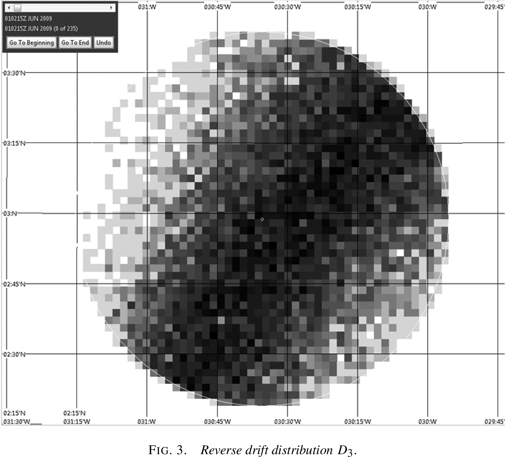
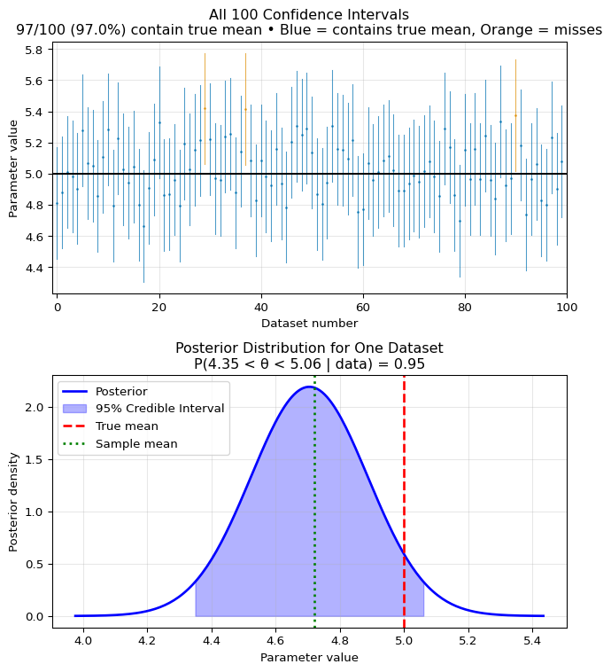

After completing this chapter, you will be able to:
Apply Bayes’ theorem to compute posterior distributions from prior and likelihood, and interpret credible intervals vs. confidence intervals.
Work with conjugate models (Beta-Bernoulli, Normal-Normal) to derive posteriors and understand how data and prior beliefs combine.
Choose appropriate priors and explain their impact on inference, particularly as sample size increases.
Use decision theory to compare estimators via loss functions and risk, understanding why we need scalar summaries (Bayes risk, maximum risk).
Identify optimal estimators by connecting posterior summaries to Bayes estimators, finding minimax estimators via constant risk, and determining admissibility.
Note
This chapter introduces two deeply connected topics: Bayesian inference, which provides a principled way to update beliefs with data, and statistical decision theory, which gives us a formal framework for comparing any statistical procedure. The material is adapted from Chapters 11 and 12 of Wasserman (2013) and supplemented with modern perspectives and computational examples.
8.2 Introduction: A Different Way of Thinking
8.2.1 The Search for Air France Flight 447
On June 1, 2009, Air France Flight 447 vanished over the Atlantic Ocean. The Airbus A330, carrying 228 people, disappeared from radar while flying from Rio de Janeiro to Paris, leaving behind only automated messages indicating system failures. What followed was one of the most challenging search operations in aviation history – and ultimately, a powerful demonstration of how Bayesian inference succeeds by integrating multiple sources of uncertain information. This remarkable story is documented in detail in Stone et al. (2014), from which the figures and search details in this section are taken.
Modern airliners transmit their position every 10 minutes via satellite. When AF447’s transmissions stopped at 2:14 AM, it created a circular search area with a 40 nautical mile (74 km) radius – still covering over 5,000 square nautical miles of ocean.
The depth in this region reaches 14,000 feet, with underwater mountains and valleys making detection extremely challenging. The flight data and cockpit voice recorders, crucial for understanding what happened, emit acoustic beacons that function for about 40 days and have a detection range of about 2,000 meters.
This wasn’t just a search problem – it was a problem of combining uncertain, conflicting information from multiple sources.
The intended flight path of AF447 and the 40 NM radius circle centered on the last known position (LKP). The circle represents the maximum distance the aircraft could have traveled after its last transmission. Figure from Stone et al. (2014).
The Initial Search Efforts
Throughout 2009 and 2010, search teams employed sophisticated statistical models including oceanographic drift analysis and confidence regions. However, each search operation focused on a single line of evidence rather than integrating all available information. These efforts, while extensive and expensive, all failed to locate the wreckage:
The first phase focused on finding floating debris. After six days,
search aircraft spotted debris and bodies approximately 38 NM north of
the last known position. Scientists then used reverse drift modeling
(working backwards from where debris was found, using ocean current data
to estimate where it originated) to predict where the wreckage might
be.
Result: No wreckage found in the predicted
areas.
Teams deployed sensitive hydrophones to listen for the flight
recorders’ acoustic beacons. They concentrated along the intended flight
path, reasoning the aircraft was likely on course when it crashed.
The vertical and horizontal search lines
showing the passive acoustic search paths for the flight recorder
beacons. The circles show the 20 and 40 NM radius from the last known
position. Figure from Stone et al. (2014).
Result: No signals detected. The search assumed the
beacons were functioning – a reasonable but ultimately incorrect
assumption.
A limited side-scan sonar search was conducted south of the last
known position in areas not covered in June.
Regions searched by active side-looking
sonar. The small rectangle shows the limited August 2009 coverage, while
the larger areas show April-May 2010 coverage. Figure from Stone et
al. (2014).
Result: No wreckage found.
Scientists computed a 95% confidence region by reverse drift modeling
from where bodies and debris were recovered. By simulating ocean
currents backwards in time, they estimated where the crash most likely
occurred, producing a search zone north and west of the last known
position.
The 95% confidence zone recommended for
the 2010 search, located north and west of the LKP, based on reverse
drift modeling. Figure from Stone et al. (2014).
Result: No wreckage found. The confidence region,
while statistically valid, relied heavily on ocean current models and
didn’t integrate other sources of evidence like historical crash
locations or search effectiveness.
Why the Initial Approaches Failed
Each search used valid and sophisticated statistical reasoning but treated evidence in isolation:
Drift models didn’t account for prior crash locations
Passive acoustic searches couldn’t distinguish between beacon failure and absence of wreckage
Search patterns didn’t incorporate the probability of missing the wreckage
No unified framework was used to combine these different sources of uncertainty
The Bayesian Strategy
In July 2010, after four unsuccessful search operations, the French aviation authority (BEA) assembled a new team of statisticians to design a search strategy for 2011. This team took a fundamentally different approach: instead of treating each piece of evidence separately, they used Bayesian inference to combine all sources of information into a single probability distribution.
The Bayesian Framework
The team constructed a posterior probability distribution for the wreckage location by combining:
Prior Distribution: Historical data showed that aircraft are usually found close to their last known position. This gave higher prior probability to areas near the center of the circle.
Drift Model Likelihood: Bodies found north of the LKP implied certain starting positions were more likely than others – but with significant uncertainty.
Search Effectiveness: Previous searches weren’t perfect. The team modeled the probability of missing the wreckage in searched areas, particularly accounting for terrain difficulty.
Beacon Failure Possibility: The lack of acoustic signals could mean either the wreckage wasn’t in searched areas OR the beacons had failed. Bayesian analysis could incorporate both possibilities.

Reverse drift distribution showing the probability density of potential crash locations based on where bodies and debris were found. This was one key input to the Bayesian analysis. Figure from Stone et al. (2014).
Negative search results (no detection in searched areas)
Positive drift data (bodies found at specific locations)
Timing constraints (time between crash and debris discovery)
The likelihood P(\text{all evidence} | \text{location}) was itself a product of multiple conditional probabilities, each capturing different aspects of the search problem. Monte Carlo methods were used to integrate over unknown parameters like ocean current variations and detection probabilities.
The Breakthrough
The Bayesian analysis produced a surprising result: the highest probability areas were very close to the last known position. Although these areas had been covered by passive acoustic searches in 2009, the active sonar efforts in 2009-2010 had focused elsewhere based on drift models.
The Key Insight
The Bayesian approach revealed that multiple pieces of weak evidence all pointed to the same conclusion:
Historical data suggested searching near the LKP
Debris drift models had high uncertainty and conflicting predictions
The failure to find wreckage in extensively searched areas increased relative probability elsewhere
Beacon failure was historically more likely than initially assumed
No single piece of evidence was conclusive, but together they pointed strongly to areas near the last known position.
Discovery and Vindication
The new search began in 2011, focusing on the high-probability areas identified by the Bayesian analysis. After just one week of searching, on April 3, 2011, the wreckage was found at a depth of approximately 14,000 feet, very close to the last known position.
Posterior distribution from the Bayesian analysis, showing the actual wreck location marked. The dark area near the center shows the highest probability zone, which correctly identified the area where the wreckage was ultimately found. Figure from Stone et al. (2014).
Why Bayesian Methods Succeeded
The Bayesian approach succeeded where the initial methods failed for three fundamental reasons:
Coherent Information Integration: While the initial searches treated each piece of evidence separately, Bayesian inference combined them into a single, coherent picture.
Uncertainty Quantification: The approach explicitly modeled multiple sources of uncertainty – from ocean currents to sensor reliability – rather than assuming point estimates were correct.
Prior Knowledge Utilization: Historical data about crash locations provided valuable information that pure data-driven approaches ignored.
This case demonstrates the power of Bayesian thinking: when faced with multiple sources of imperfect information, Bayesian methods provide the mathematical framework to combine them optimally.
8.2.2 The Two Philosophies of Statistics
In the world of statistical inference, there are two major philosophical schools of thought about probability, parameters, and how we should make inferences from data. These aren’t just abstract philosophical debates – they lead to fundamentally different methods, interpretations, and answers. Understanding both perspectives is crucial for modern data scientists.
We’ve been working primarily within the frequentist framework
throughout this course. Let’s formalize its key principles:
F1. Probability as Frequency: Probability refers to
limiting relative frequencies in repeated experiments. Probabilities are
objective properties of the real world. When we say a coin has
probability 0.5 of landing heads, we mean that in an infinite sequence
of flips, exactly half would be heads.
F2. Fixed Parameters: Parameters are fixed, unknown
constants. They are not random variables. Because they don’t vary, we
cannot make probability statements about them. We can’t say “there’s a
95% probability that \(\mu\) is between
2 and 4” – either it is or it isn’t.
F3. Long-Run Performance: Statistical methods should
have well-defined long-run frequency properties. A 95% confidence
interval should trap the true parameter in 95% of repeated experiments.
This is a statement about the procedure, not about any particular
interval.
F4. Point-Conditioned Prediction: Predictions are
typically conditioned on a single parameter value, often an estimate
like the MLE. We predict future data assuming our estimate is
correct.
F5. Separate Theories: There’s no single,
overarching theory unifying all aspects of frequentist inference.
Estimation theory, hypothesis testing, and prediction each have their
own frameworks and optimality criteria.
The Bayesian approach starts from fundamentally different
assumptions:
B1. Probability as Belief: Probability describes
degree of belief or confidence. Probabilities can be subjective and
represent our uncertainty about anything – including fixed events. We
can meaningfully say “I’m 70% confident it rained in Paris on January 1,
1850” even though this is a fixed historical fact.
B2. Probabilistic Parameters: We can make
probability statements about parameters, treating our uncertainty about
them as something to be described by a probability distribution. Even
though \(\theta\) is fixed, our
knowledge about it is uncertain, and we quantify this uncertainty with
probabilities.
B3. Inference as Belief Updating: The core of
inference is updating our beliefs about parameters by producing a
posterior probability distribution after observing data. This posterior
encapsulates everything we know about the parameter.
B4. Averaged Prediction: Predictions are made by
averaging over all parameter values, weighted by their posterior
probability. Instead of picking one “best” parameter value, we consider
all plausible values.
B5. Unified Theory: The framework has a strong,
unified theoretical foundation based on the rules of probability. Bayes’
theorem provides a single coherent approach to all inference
problems.
8.2.3 This Chapter’s Goal
We will explore two deeply connected topics:
Bayesian Inference: The machinery for updating our beliefs about parameters using data. We’ll see how prior knowledge combines with observed data to produce posterior distributions.
Statistical Decision Theory: A formal framework for choosing the “best” estimator under any paradigm. This theory, which applies to both frequentist and Bayesian methods, gives us a rigorous way to compare different statistical procedures.
These topics are connected because Bayesian inference naturally leads to optimal estimators under decision theory, while decision theory helps us understand when and why Bayesian methods work well.
Finnish Terminology Reference
For Finnish-speaking students, here’s a reference table of key terms in this chapter:
English
Finnish
Context
Bayesian inference
Bayesiläinen päättely
Main inferential framework
Prior distribution
Priorijakauma
Beliefs before seeing data
Posterior distribution
Posteriorijakauma
Updated beliefs after data
Likelihood
Uskottavuus
Probability of data given parameters
Credible interval
Uskottavuusväli
Bayesian confidence interval
Loss function
Tappiofunktio
Measure of estimation error
Risk
Riski
Expected loss
Bayes estimator
Bayes-estimaattori
Minimizes Bayes risk
Minimax estimator
Minimax-estimaattori
Minimizes maximum risk
Admissible
Käypä, kelvollinen
Cannot be uniformly improved
8.3 The Bayesian Method: Updating Beliefs with Data
8.3.1 The Engine: Bayes’ Theorem for Inference
The Bayesian method centers on a fundamental question: how do we make predictions about unknown quantities when we have uncertain knowledge about the parameters that govern them?
Consider predicting some unknown quantity x^* (which could be future data, or properties of the parameter itself) when we have:
A model with unknown parameter \theta
Observed data x^n = (x_1, \ldots, x_n) that provides information about \theta
Using the rules of probability, we can write: f(x^* | x^n) = \int f(x^* | \theta, x^n) f(\theta | x^n) d\theta
If x^* depends on the data only through \theta (a common assumption), this simplifies to: f(x^* | x^n) = \int f(x^* | \theta) f(\theta | x^n) d\theta
This equation reveals the key insight: to make predictions, we need the posterior distributionf(\theta | x^n). The posterior tells us which parameter values are plausible given the data, and we average our predictions over all these plausible values.
The Components of Bayesian Inference
To compute the posterior distribution f(\theta | x^n), we need:
Prior Distribution f(\theta): What we believe about \thetabefore seeing the data. This encodes our initial knowledge or assumptions. We will see later how the prior is chosen.
Likelihood f(x^n | \theta) or \mathcal{L}_n(\theta): The probability of observing our data given different parameter values. This is the same likelihood function used in maximum likelihood estimation.
Posterior Distribution f(\theta | x^n): Our updated belief about \thetaafter seeing the data, obtained via Bayes’ theorem.
The posterior distribution is computed as: f(\theta | x^n) = \frac{f(x^n | \theta) f(\theta)}{\int f(x^n | \theta) f(\theta) d\theta}
The denominator \int f(x^n | \theta) f(\theta) d\theta is called the marginal likelihood or evidence. It’s a normalizing constant that ensures the posterior integrates to 1.1
We often do not specifically care about the normalizing constant, and write: f(\theta | x^n) \propto f(x^n | \theta) f(\theta)
denoting that the posterior is proportional to Likelihood times Prior.
When the observations X_1, \ldots, X_n are IID given \theta, the likelihood factorizes: f(\theta | x^n) \propto \mathcal{L}_n(\theta) f(\theta) = \left[\prod_{i=1}^n f(x_i | \theta)\right] f(\theta)
This product structure is what allows evidence to accumulate across independent observations.
Why Do We Care About the Posterior?
The posterior distribution serves two distinct purposes:
1. Direct Parameter Inference: Sometimes the parameters themselves are what we want to know:
What’s the true efficacy of a vaccine?
What’s the rate of climate change?
What’s a manufacturing process’s defect rate?
Here, we examine the posterior directly to understand the parameter values.
2. Prediction: Other times, parameters are just a means to predict future observations:
Estimating weather model parameters to forecast tomorrow’s conditions
Learning user preferences to recommend movies
Estimating volatility to predict financial risk
For prediction, we integrate over the posterior, incorporating parameter uncertainty into our forecasts rather than conditioning on a single estimate.
8.3.2 Summarizing the Posterior
The posterior distribution f(\theta | x^n) contains all our knowledge about \theta after seeing the data. It’s the complete Bayesian answer to an inference problem. However, we often need to summarize this distribution with a single point – a point estimate – for communication or decision-making.
The most probable value according to the posterior. MAP stands for “Maximum A Posteriori.”2
Interval Estimates:
Credible Interval: A (1-\alpha) credible interval3 is a range (a, b) such that: \mathbb{P}(a < \theta < b | x^n) = 1-\alpha
Typically computed as an equal-tailed interval by finding a and b where \int_{-\infty}^a f(\theta | x^n) d\theta = \int_b^{\infty} f(\theta | x^n) d\theta = \alpha/2.
Credible vs. Confidence Intervals
A crucial distinction:
Credible interval (Bayesian): “Given the data, there’s a 95% probability that \theta lies in this interval.”
Confidence interval (Frequentist): “This procedure produces intervals that trap the true \theta in 95% of repeated experiments.”
The credible interval makes a direct probability statement about the parameter, which is what most people incorrectly think confidence intervals do!
Imagine you’re trying to estimate the average height in a population.
You take a sample and compute an interval.
Confidence Interval (Frequentist): “If I repeated
this sampling procedure 100 times, about 95 of those intervals would
contain the true average height.” It’s a statement about the reliability
of the method, not about any specific interval. Once computed,
the true value is either in it or not – there’s no probability
involved.
Credible Interval (Bayesian): “Based on the data I
observed and my prior knowledge, I’m 95% confident the true average
height is in this interval.” It’s a direct probability statement about
where the parameter lies, given what we’ve learned.
The confidence interval is like a fishing net manufacturer’s
guarantee: “95% of our nets catch fish.” The credible interval is like a
weather forecast: “95% chance of rain tomorrow.” One describes a
long-run property of a procedure; the other describes belief about a
specific unknown.
Let \(\theta\) be the parameter and
\(X^n\) the observed data.
Confidence Interval: Find functions
\(L(X^n)\) and
\(U(X^n)\) such that:
\[\mathbb{P}_\theta(L(X^n) \leq \theta \leq U(X^n)) = 1-\alpha \text{ for all } \theta\]
The probability is over the random data
\(X^n\), with
\(\theta\) fixed. Different data gives
different intervals.
Credible Interval: Find constants
\(a\) and
\(b\) such that:
\[\int_a^b f(\theta|X^n) d\theta = 1-\alpha\]
The probability is over the parameter
\(\theta\) given fixed, observed data
\(X^n\). The interval quantifies our
posterior uncertainty about
\(\theta\).
Key difference: In confidence intervals, data is random and parameter
is fixed. In credible intervals, data is fixed (observed) and parameter
is treated as random (uncertain).
Let’s simulate both types of intervals to see their fundamental
difference. We’ll generate many datasets to show the frequentist
coverage property, then compute a single credible interval to show the
Bayesian probability statement:
import numpy as npfrom scipy import statsimport matplotlib.pyplot as plt# Simulate the difference between confidence and credible intervalsnp.random.seed(42)# True parametertrue_mean =5.0true_std =1.0n =30# Generate many datasets to show confidence interval behaviorn_simulations =100confidence_intervals = []for i inrange(n_simulations):# Generate a dataset data = np.random.normal(true_mean, true_std, n) sample_mean = np.mean(data) sample_se = true_std / np.sqrt(n) # Known variance case# 95% Confidence interval ci_lower = sample_mean -1.96* sample_se ci_upper = sample_mean +1.96* sample_se confidence_intervals.append((ci_lower, ci_upper))# Count how many contain the true parametercoverage =sum(1for (l, u) in confidence_intervals if l <= true_mean <= u)print(f"Confidence Interval Coverage: {coverage}/{n_simulations} = {coverage/n_simulations:.2%}")print("This demonstrates the frequentist guarantee: ~95% coverage in repeated sampling")# Visualize all 100 confidence intervalsfig, (ax1, ax2) = plt.subplots(2, 1, figsize=(7, 8))# Top panel: Show all confidence intervalsax1.axhline(true_mean, color='black', linestyle='-', label='True mean', linewidth=1.5, zorder=5)# Plot all intervals, colored by whether they contain the true meanfor i inrange(n_simulations): l, u = confidence_intervals[i] contains_true = l <= true_mean <= u color ='#0173B2'if contains_true else'#DE8F05'# Blue vs Orange (high contrast, colorblind safe)# Use thinner lines and transparency for better visualization ax1.plot([i, i], [l, u], color=color, linewidth=0.8, alpha=0.7)# Small dots for interval centers ax1.plot(i, (l+u)/2, '.', color=color, markersize=2, alpha=0.8)# Add summary statisticsn_containing =sum(1for (l,u) in confidence_intervals if l <= true_mean <= u)ax1.set_xlabel('Dataset number')ax1.set_ylabel('Parameter value')ax1.set_title(f'All {n_simulations} Confidence Intervals\n'f'{n_containing}/{n_simulations} ({n_containing/n_simulations:.1%}) contain true mean • 'f'Blue = contains true mean, Orange = misses')ax1.grid(True, alpha=0.3)ax1.set_xlim(-1, n_simulations)# Now show a single Bayesian credible intervalsingle_dataset = np.random.normal(true_mean, true_std, n)sample_mean = np.mean(single_dataset)# With a Normal prior N(0, 10) and known varianceprior_mean, prior_var =0, 10posterior_var =1/ (1/prior_var + n/true_std**2)posterior_mean = posterior_var * (prior_mean/prior_var + n*sample_mean/true_std**2)posterior_std = np.sqrt(posterior_var)# 95% Credible intervalcred_lower = posterior_mean -1.96* posterior_stdcred_upper = posterior_mean +1.96* posterior_std# Bottom panel: Show posterior distributionx_range = np.linspace(posterior_mean -4*posterior_std, posterior_mean +4*posterior_std, 200)posterior_density = stats.norm.pdf(x_range, posterior_mean, posterior_std)ax2.plot(x_range, posterior_density, 'b-', linewidth=2, label='Posterior')ax2.fill_between(x_range, posterior_density, where=(x_range >= cred_lower) & (x_range <= cred_upper), alpha=0.3, color='blue', label='95% Credible Interval')ax2.axvline(true_mean, color='red', linestyle='--', label='True mean', linewidth=2)ax2.axvline(sample_mean, color='green', linestyle=':', label='Sample mean', linewidth=2)ax2.set_xlabel('Parameter value')ax2.set_ylabel('Posterior density')ax2.set_title(f'Posterior Distribution for One Dataset\nP({cred_lower:.2f} < θ < {cred_upper:.2f} | data) = 0.95')ax2.legend()ax2.grid(True, alpha=0.3)plt.tight_layout()plt.show()print(f"\nFor this specific dataset:")print(f" Sample mean: {sample_mean:.2f}")print(f" 95% Credible Interval: [{cred_lower:.2f}, {cred_upper:.2f}]")print(f" This is a direct probability statement about the parameter!")
Confidence Interval Coverage: 97/100 = 97.00%
This demonstrates the frequentist guarantee: ~95% coverage in repeated sampling
For this specific dataset:
Sample mean: 4.72
95% Credible Interval: [4.35, 5.06]
This is a direct probability statement about the parameter!

Key Takeaway: Confidence intervals achieve 95%
coverage across many experiments (a procedure property), while
credible intervals give 95% probability for this specific
dataset (a parameter property). Same numbers, fundamentally
different meanings.
8.4 Bayesian Inference in Action
8.4.1 Conjugate Models and Conjugate Priors
In principle, Bayesian inference requires us to compute integrals to normalize the posterior distribution. In practice, these integrals are often intractable. However, for certain combinations of priors and likelihoods, the posterior has a nice closed form. These special cases are called conjugate models.
What is a Conjugate Prior?
A prior is conjugate to a likelihood if the resulting posterior distribution is in the same family as the prior. This means:
If the prior is Beta, the posterior is also Beta
If the prior is Normal, the posterior is also Normal
Conjugacy provides a convenient analytical shortcut, though modern computational methods have reduced its importance.
Example: The Bernoulli-Beta Model
Consider the fundamental problem of estimating a probability from binary data. Let X_i \sim \text{Bernoulli}(p) for i = 1, ..., n, where we observe s successes out of n trials.
Starting with a Uniform Prior:
Since p is a probability, it must lie in [0,1]. If we have no prior information, a natural choice is the uniform prior: f(p) = 1 for p \in [0,1].
Likelihood: With s successes in n trials, the likelihood is: \mathcal{L}_n(p) \propto p^s(1-p)^{n-s}
This has the form of a Beta distribution! Specifically, if we match the parameters: p | x^n \sim \text{Beta}(s+1, n-s+1)
The mean of \text{Beta}(\alpha, \beta) is \alpha / (\alpha + \beta), so the posterior mean here is \bar{p} = \frac{s+1}{n+2}, which can be written as: \bar{p} = \frac{n}{n+2} \cdot \frac{s}{n} + \frac{2}{n+2} \cdot \frac{1}{2}
This is a weighted average of the MLE \hat{p} = s/n and the prior mean 1/2, with the data getting more weight as n increases.
The General Beta Prior:
The uniform prior is actually a special case of the Beta distribution. In general, if we use a \text{Beta}(\alpha, \beta) prior: f(p) = \frac{\Gamma(\alpha + \beta)}{\Gamma(\alpha)\Gamma(\beta)} p^{\alpha-1}(1-p)^{\beta-1}
Then the posterior is: p | x^n \sim \text{Beta}(\alpha + s, \beta + n - s)
Key insights:
The Beta distribution is conjugate to the Bernoulli likelihood - the posterior stays in the Beta family
The parameters \alpha and \beta act as “pseudo-counts”: \alpha prior successes, \beta prior failures
The uniform prior is \text{Beta}(1, 1) - one pseudo-success and one pseudo-failure
The posterior mean \bar{p} = \frac{\alpha + s}{\alpha + \beta + n} combines prior pseudo-counts with observed counts
As n \to \infty, the data dominates and the prior’s influence vanishes
Let’s visualize how the posterior evolves with data:
Show code
import numpy as npimport matplotlib.pyplot as pltfrom scipy import stats# Set up the figurefig, axes = plt.subplots(2, 1, figsize=(7, 7))# Top panel: Effect of sample sizeax1 = axes[0]p_true =0.7# True probabilityalpha_prior, beta_prior =1, 1# Uniform prior# Different sample sizessample_sizes = [0, 10, 50, 200]colors = ['gray', 'blue', 'green', 'red']p_range = np.linspace(0, 1, 200)# Set seed once outside the loop for reproducible resultsnp.random.seed(42)for n, color inzip(sample_sizes, colors):if n ==0:# Just the prior y = stats.beta.pdf(p_range, alpha_prior, beta_prior) label ='Prior'else:# Simulate data s = np.random.binomial(n, p_true)# Posterior parameters alpha_post = alpha_prior + s beta_post = beta_prior + n - s y = stats.beta.pdf(p_range, alpha_post, beta_post) label =f'n={n}, s={s}' ax1.plot(p_range, y, color=color, linewidth=2, label=label)ax1.axvline(p_true, color='black', linestyle='--', alpha=0.5, label='True p')ax1.set_xlabel('p')ax1.set_ylabel('Density')ax1.set_title('Posterior Becomes More Concentrated with More Data')ax1.legend()ax1.grid(True, alpha=0.3)# Bottom panel: Effect of different priorsax2 = axes[1]n =20s =10# 50% success rate in datapriors = [ (1, 1, 'Uniform: Beta(1,1)'), (10, 10, 'Informative: Beta(10,10)'), (1, 10, 'Skeptical: Beta(1,10)')]for (alpha, beta, label) in priors:# Prior prior_y = stats.beta.pdf(p_range, alpha, beta) ax2.plot(p_range, prior_y, linestyle=':', alpha=0.5)# Posterior alpha_post = alpha + s beta_post = beta + n - s post_y = stats.beta.pdf(p_range, alpha_post, beta_post) ax2.plot(p_range, post_y, linewidth=2, label=label)ax2.axvline(0.5, color='black', linestyle='--', alpha=0.5, label='MLE')ax2.set_xlabel('p')ax2.set_ylabel('Density')ax2.set_title(f'Different Priors, Same Data (n={n}, s={s})')ax2.legend()ax2.grid(True, alpha=0.3)plt.tight_layout()plt.show()
The plots illustrate two key principles:
Top panel: As we collect more data, the posterior becomes increasingly concentrated around the true value, regardless of the prior.
Bottom panel: Different priors lead to different posteriors (but this effect diminishes with larger sample sizes).
Example: The Normal-Normal Model
Now consider estimating the mean of a Normal distribution with known variance. Let X_i \sim \mathcal{N}(\theta, \sigma^2) where \sigma^2 is known (this assumption simplifies the math and is commonly used in introductory examples).
Likelihood: For IID data, the sufficient statistic is the sample mean \bar{x}, and: \bar{x} | \theta \sim \mathcal{N}(\theta, \sigma^2/n)
Given a likelihood X_i | \theta \sim \mathcal{N}(\theta, \sigma^2) (known \sigma^2) and a prior \theta \sim \mathcal{N}(\theta_0, \sigma_0^2), the posterior is:
Precision (inverse variance) is additive: posterior precision = prior precision + data precision
The posterior mean is a precision-weighted average of prior mean and sample mean
More precise information gets more weight
The posterior mean interpolates between the prior mean and sample mean, with the weight given to the data increasing as n increases
Posterior is always more precise than either prior or likelihood alone
Show code for Normal-Normal posterior calculation
def normal_normal_posterior(prior_mean, prior_var, data_mean, data_var, n):""" Calculate posterior parameters for Normal-Normal conjugate model. Parameters: ----------- prior_mean : Prior mean θ₀ prior_var : Prior variance σ₀² data_mean : Sample mean x̄ data_var : Known data variance σ² n : Sample size Returns: -------- post_mean : Posterior mean θ* post_var : Posterior variance σ*² """# Convert to precisions (inverse variances) prior_precision =1/ prior_var data_precision = n / data_var# Posterior precision is sum of precisions post_precision = prior_precision + data_precision post_var =1/ post_precision# Posterior mean is precision-weighted average post_mean = post_var * (prior_precision * prior_mean + data_precision * data_mean)return post_mean, post_var# Example calculationprior_mean, prior_var =0, 4# Prior: N(0, 4)data_var =1# Known variancen =10data_mean =2.3# Observed sample meanpost_mean, post_var = normal_normal_posterior( prior_mean, prior_var, data_mean, data_var, n)print(f"Prior: N({prior_mean}, {prior_var})")print(f"Data: n={n}, x̄={data_mean}, σ²={data_var}")print(f"Posterior: N({post_mean:.3f}, {post_var:.3f})")print(f"\nPosterior mean is {post_mean:.3f}, between prior mean {prior_mean} and MLE {data_mean}")
Prior: N(0, 4)
Data: n=10, x̄=2.3, σ²=1
Posterior: N(2.244, 0.098)
Posterior mean is 2.244, between prior mean 0 and MLE 2.3
8.4.2 The Art and Science of Choosing Priors
One of the most debated topics in Bayesian statistics is how to choose the prior distribution. Critics argue that priors introduce subjectivity; advocates counter that they make assumptions explicit. The reality is nuanced: prior choice is both an art requiring judgment and a science with established principles.
Conjugate Priors: We’ve seen these in action – Beta for Bernoulli, Normal for Normal. They’re computationally convenient and have nice interpretations (like pseudo-counts), but they may not reflect genuine prior beliefs. Using them just for convenience can lead to misleading results.
Non-Informative Priors: These attempt to be “objective” by letting the data speak for itself. Common choices include:
Uniform priors: f(\theta) = \text{constant}
Jeffreys’ prior: f(\theta) \propto \sqrt{I(\theta)} where I(\theta) is the Fisher information
The Flat Prior Fallacy
A uniform prior is not “uninformative”! Consider:
Scale matters: A uniform prior on [-10^6, 10^6] says |\theta| is almost certainly large
Not transformation invariant: If p \sim \text{Uniform}(0,1), then \log(p/(1-p)) is not uniform
Can encode strong beliefs: Uniform on [0, 1000] for a rate parameter implies most mass is on very large values (highly informative!)
The notion of “no information” is not well-defined mathematically.
Advanced: Jeffreys’ Prior
Jeffreys proposed using f(\theta) \propto \sqrt{I(\theta)} where I(\theta) is the Fisher information. This prior has a key property: it’s invariant to reparameterization. If we transform \theta to \varphi = g(\theta), the Jeffreys prior for \varphi is what we’d get by transforming the Jeffreys prior for \theta.
For \text{Bernoulli}(p), the Jeffreys prior is \text{Beta}(1/2, 1/2), which is U-shaped, putting more mass near 0 and 1 than at 0.5 – hardly “uninformative”!
Weakly Informative Priors: This is the recommended approach nowadays which balances several goals:
Wide enough to not exclude plausible values
Tight enough to exclude absurd values
Regularize estimation to prevent overfitting
For example, for a logistic regression coefficient, a \mathcal{N}(0, 2.5^2) prior (mean 0, standard deviation 2.5) allows large effects but prevents numerical instability. Note: We use the \mathcal{N}(\mu, \sigma^2) parameterization throughout these notes.
The Challenge of High-Dimensional Priors
Placing sensible priors becomes increasingly difficult as dimensionality grows:
The Gaussian bubble: In high dimensions, a multivariate standard normal \mathcal{N}(0, I) concentrates its mass in a thin shell at radius \sqrt{d} from the origin – almost no mass is near zero despite this being the “center” of the distribution. This concentration of measure phenomenon means our intuitions about priors break down (see this blog post).
Deep learning: Specifying priors for millions of neural network weights remains an open problem in Bayesian deep learning. Most practitioners resort to simple priors like \mathcal{N}(0, \sigma^2 I) that don’t capture the true structure, or avoid fully Bayesian approaches altogether.
High-dimensional Bayesian inference requires careful thought about what the prior actually implies when there are many parameters.
Advanced: The Bayesian Central Limit Theorem
A remarkable result shows that Bayesian and frequentist methods converge with enough data.
Under suitable regularity conditions, as n \to \infty, the posterior distribution can be approximated by: f(\theta | x^n) \approx \mathcal{N}(\hat{\theta}_{MLE}, \widehat{se}^2)
where \hat{\theta}_{MLE} is the maximum likelihood estimate and \widehat{se} is its standard error.
The likelihood dominates both approaches in large samples
This is reassuring: two philosophically different approaches converge to the same practical conclusions when we have sufficient evidence.
8.4.3 Implementing Bayesian Inference
For the conjugate models in this chapter, we can solve for the posterior distribution analytically. But what happens in more complex, real-world models where this is not possible?
The modern Bayesian workflow relies on powerful computational algorithms, most commonly Markov chain Monte Carlo (MCMC). These algorithms allow us to generate a large collection of samples that are representative of the posterior distribution, even when we cannot solve for it directly. Once we have these samples, we can approximate any summary we need (like the mean or a credible interval) and easily get posteriors for transformed parameters.
Modern probabilistic programming frameworks such as Stan or PyMC allow users to perform Bayesian inference relatively easily, exploiting modern machinery. This computational approach is incredibly powerful and flexible, and we will explore it in detail in Chapter 10. For now, the key takeaway is that the goal of Bayesian inference is always to obtain the posterior; the methods in this chapter do it with math, while later methods will do it with computation.
8.5 Statistical Decision Theory: A Framework for “Best”
We now shift from Bayesian inference to a more general question: given multiple ways to estimate a parameter, how do we choose the best one? Statistical decision theory provides a formal framework for comparing any estimators – Bayesian, frequentist, or otherwise.
8.5.1 The Ingredients: Loss and Risk
To compare estimators formally, we need to quantify how “wrong” an estimate is.
Loss FunctionL(\theta, \hat{\theta}): Quantifies the penalty for estimating \theta with \hat{\theta}.
Loss tells us the cost of a specific estimate for a specific parameter value. But estimators are random – they depend on data. So we need to average:
RiskR(\theta, \hat{\theta}): The expected loss over all possible datasets, for a given loss function \mathcal{L} and fixed \theta. R(\theta, \hat{\theta}) = \mathbb{E}_{\theta}[L(\theta, \hat{\theta}(X))] = \int L(\theta, \hat{\theta}(x)) f(x;\theta) dx
For squared error loss, the risk equals the MSE: R(\theta, \hat{\theta}) = \mathbb{E}_{\theta}[(\theta - \hat{\theta})^2] = \text{MSE} = \mathbb{V}(\hat{\theta}) + \text{Bias}^2(\hat{\theta})
Think of risk as the “average wrongness” of an estimator, for a
specific definition of “wrongness” (loss function). Imagine you could
repeat your experiment many times with the same true parameter value.
Each time, you’d get different data and thus a different estimate. The
risk tells you the average penalty you’d pay across all these
repetitions.
It’s like evaluating a weather forecaster: you don’t judge them on
one prediction, but on their average performance over many days. An
estimator with low risk is consistently good, even if it’s not perfect
on any single dataset.
Risk is the frequentist expectation of the loss function, treating
the estimator as a random variable (through its dependence on random
data) while holding the parameter fixed:
This contrasts with Bayes risk, which averages over
\(\theta\) according to a prior. The
risk function \(R(\theta, \cdot)\) maps
each parameter value to a real number, creating a curve that
characterizes the estimator’s performance across the parameter
space.
For squared error loss, the bias-variance decomposition shows that
risk combines systematic error (bias) with variability (variance),
revealing the fundamental tradeoff in estimation.
We can understand risk concretely through simulation. The following
code demonstrates what risk actually means by repeatedly generating
datasets from the same distribution and computing the squared loss for
each one:
import numpy as npdef estimate_risk_by_simulation(true_theta, estimator_func, n_samples=20, n_simulations=10000):""" Estimate risk via Monte Carlo simulation. This shows what risk really means: the average loss over many possible datasets. """ losses = []for _ inrange(n_simulations):# Generate a dataset (example: Normal distribution) data = np.random.normal(true_theta, 1, n_samples)# Compute the estimate for this dataset estimate = estimator_func(data)# Compute the loss (using squared error) loss = (estimate - true_theta)**2 losses.append(loss)# Risk is the average loss risk = np.mean(losses)print(f"True parameter: {true_theta}")print(f"Estimated risk: {risk:.4f}")print(f"Min loss seen: {np.min(losses):.4f}")print(f"Max loss seen: {np.max(losses):.4f}")return risk# Example: Risk of sample mean estimatorrisk = estimate_risk_by_simulation( true_theta=5.0, estimator_func=lambda data: np.mean(data), n_samples=20)
True parameter: 5.0
Estimated risk: 0.0503
Min loss seen: 0.0000
Max loss seen: 0.8506
Key Takeaway: Risk is the average loss
across all possible datasets. The simulation shows that while individual
losses vary widely (min to max), risk captures the expected performance
of an estimator.
8.5.2 The Challenge of Comparing Risk Functions
Risk functions are curves – one risk value for each possible \theta. This creates a fundamental problem: estimators rarely dominate uniformly.
Example: A Simple Case
Let X \sim \mathcal{N}(\theta, 1) and let’s assume squared error loss. Compare:
\hat{\theta}_1 = X (the sensible estimator)
\hat{\theta}_2 = 3 (a silly constant estimator)
Risk calculations:
For \hat{\theta}_1 = X: R(\theta, \hat{\theta}_1) = \mathbb{E}_\theta[(X - \theta)^2] = \text{Var}(X) = 1 This is constant for all \theta.
For \hat{\theta}_2 = 3: R(\theta, \hat{\theta}_2) = \mathbb{E}_\theta[(3 - \theta)^2] = (3-\theta)^2 This depends on \theta since the estimator is non-random.
The constant estimator is actually better when \theta is near 3 (“a broken clock is right twice a day”), but terrible elsewhere. Still, neither uniformly dominates the other.
Example: Bernoulli Estimation
Consider X_1, \ldots, X_n \sim \text{Bernoulli}(p) with squared error loss. Let S = \sum_{i=1}^n X_i be the number of successes.
We’ll compare two natural estimators by computing their risk functions.
Estimator 1: MLE
The MLE is \hat{p}_1 = \bar{X} = \frac{S}{n}
Since S \sim \text{Binomial}(n, p), we have:
\mathbb{E}[S] = np, so \mathbb{E}[\hat{p}_1] = p (unbiased)
\text{Var}(S) = np(1-p), so \text{Var}(\hat{p}_1) = \frac{p(1-p)}{n}
The risk under squared error loss is: R(p, \hat{p}_1) = \mathbb{E}[(\hat{p}_1 - p)^2] = \text{Var}(\hat{p}_1) + \text{Bias}^2(\hat{p}_1) = \frac{p(1-p)}{n} + 0 = \frac{p(1-p)}{n}
This is a parabola with maximum at p = 1/2.
Estimator 2: Bayesian posterior mean with Beta(α, β) prior
Using Bayes’ theorem with prior p \sim \text{Beta}(\alpha, \beta) and observing S successes: p | S \sim \text{Beta}(\alpha + S, \beta + n - S)
The posterior mean4 is: \hat{p}_2 = \frac{\alpha + S}{\alpha + \beta + n}
Therefore, the general risk formula is: R(p, \hat{p}_2) = \frac{np(1-p)}{(\alpha + \beta + n)^2} + \left(\frac{\alpha - p(\alpha + \beta)}{\alpha + \beta + n}\right)^2
Special case: Uniform prior Beta(1, 1)
For \alpha = \beta = 1, the posterior mean becomes: \hat{p}_2 = \frac{1 + S}{2 + n} = \frac{n}{n+2} \cdot \frac{S}{n} + \frac{2}{n+2} \cdot \frac{1}{2}
This is a weighted average of the MLE and the prior mean 1/2.
The risk specializes to: R(p, \hat{p}_2) = \frac{np(1-p)}{(n+2)^2} + \left(\frac{1 - 2p}{n + 2}\right)^2
Let’s plot both risk functions to see how they compare:
The risk functions cross! The MLE is better near the extremes (p near 0 or 1), while the Bayes estimator is better near the middle (p near 1/2). Neither estimator uniformly dominates the other.
Both examples above illustrate a fundamental challenge in decision theory: when risk functions cross, we cannot declare one estimator uniformly better than another. Different estimators excel in different regions of the parameter space.
To make a decision on the estimator to use, we must reduce these risk curves to single numbers that we can compare. But how should we summarize an entire function? Should we care most about average performance or worst-case performance? Different answers to this question lead to two distinct optimality criteria: Bayes estimators (optimizing average risk) and minimax estimators (optimizing worst-case risk), detailed in the next section.
8.6 Optimal Estimators: Bayes and Minimax Rules
8.6.1 The Bayesian Approach: Minimizing Average Risk
The Bayesian approach to decision theory averages the risk over a prior distribution, giving us a single number to minimize.
Bayes Risk: The expected risk, averaged over the prior distribution f(\theta): r(f, \hat{\theta}) = \int R(\theta, \hat{\theta}) f(\theta) d\theta
Bayes Estimator: The estimator \hat{\theta}^B that minimizes the Bayes risk: \hat{\theta}^B = \arg\min_{\hat{\theta}} r(f, \hat{\theta})
The remarkable connection between Bayesian inference and decision theory:
The Bayes estimator can be found by minimizing the posterior expected loss for each observed x. Specifically:
For Squared Error Loss: The Bayes estimator is the Posterior Mean
For Absolute Error Loss: The Bayes estimator is the Posterior Median
For Zero-One Loss: The Bayes estimator is the Posterior Mode (MAP)
Proof for Different Loss Functions
For any loss function L(\theta, \hat{\theta}), the Bayes estimator minimizes the posterior expected loss: \hat{\theta}^B(x) = \arg\min_a \mathbb{E}[L(\theta, a) | X = x] = \arg\min_a \int L(\theta, a) f(\theta|x) d\theta
Squared Error Loss: L(\theta, a) = (\theta - a)^2
We need to minimize: \int (\theta - a)^2 f(\theta|x) d\theta
Taking the derivative with respect to a and setting to zero: \frac{d}{da} \int (\theta - a)^2 f(\theta|x) d\theta = -2 \int (\theta - a) f(\theta|x) d\theta = 0
This gives: \int \theta f(\theta|x) d\theta = a \int f(\theta|x) d\theta = a
We need to minimize: \int |\theta - a| f(\theta|x) d\theta = \int_{-\infty}^a (a - \theta) f(\theta|x) d\theta + \int_a^{\infty} (\theta - a) f(\theta|x) d\theta
Taking the derivative with respect to a: \frac{d}{da} = \int_{-\infty}^a f(\theta|x) d\theta - \int_a^{\infty} f(\theta|x) d\theta = F(a|x) - (1 - F(a|x)) = 2F(a|x) - 1
Setting to zero: F(a|x) = 1/2, so \hat{\theta}^B(x) is the posterior median.
Zero-One Loss: L(\theta, a) = \mathbb{1}\{\theta \neq a\}
The expected loss is: \mathbb{E}[L(\theta, a) | X = x] = P(\theta \neq a | X = x) = 1 - P(\theta = a | X = x)
This is minimized when P(\theta = a | X = x) is maximized, which occurs at the posterior mode.
This theorem reveals a profound insight: Bayesian inference naturally produces optimal estimators! The posterior summaries we compute for inference are exactly the estimators that minimize expected loss.
8.6.2 The Frequentist Approach: Minimizing Worst-Case Risk
The minimax approach takes a pessimistic view: prepare for the worst case.
Maximum Risk: The worst-case risk over the entire parameter space \Theta: \bar{R}(\hat{\theta}) = \sup_{\theta \in \Theta} R(\theta, \hat{\theta})
Minimax Estimator: The estimator \hat{\theta}^{MM} with the smallest maximum risk: \hat{\theta}^{MM} = \arg\min_{\hat{\theta}} \sup_{\theta} R(\theta, \hat{\theta})
It’s the “best of the worst-case” estimators.
Finding minimax estimators directly is usually difficult. However, there’s a powerful connection to Bayes estimators:
If a Bayes estimator has constant risk (the same risk for all \theta), then it is minimax.
This gives us a recipe: find a prior such that the resulting Bayes estimator has constant risk.
Example: Minimax Estimator for Bernoulli
Consider X_1, \ldots, X_n \sim \text{Bernoulli}(p) with squared error loss. We know from the previous example that the Bayes estimator with prior \text{Beta}(\alpha, \beta) has risk:
The key insight: Can we choose \alpha and \beta to make this risk constant (independent of p)? If so, the constant risk theorem tells us the resulting estimator would be minimax.
It turns out that setting \alpha = \beta = \sqrt{n/4} does exactly this!
Derivation of the minimax prior
If we set \alpha = \beta, the risk becomes: R(p, \hat{p}) = \frac{1}{(2\alpha + n)^2}\left[np(1-p) + \alpha^2(1 - 2p)^2\right]
Expanding the term in brackets: np(1-p) + \alpha^2(1 - 2p)^2 = np - np^2 + \alpha^2(1 - 4p + 4p^2)= \alpha^2 + (n - 4\alpha^2)p + (4\alpha^2 - n)p^2
This is constant if and only if the coefficients of p and p^2 are both zero: - Coefficient of p: n - 4\alpha^2 = 0 \Rightarrow \alpha^2 = n/4 - Coefficient of p^2: 4\alpha^2 - n = 0 \Rightarrow \alpha^2 = n/4 ✓
Both conditions give the same answer: \alpha = \sqrt{n/4}.
With \alpha = \beta = \sqrt{n/4}:
The Bayes estimator is: \hat{p} = \frac{S + \sqrt{n/4}}{n + \sqrt{n}}
The risk is constant: R(p, \hat{p}) = \frac{n}{4(n + \sqrt{n})^2} for all p
By the theorem above, this makes it minimax!
How does this minimax estimator compare to the MLE?
The minimax estimator wins on worst-case performance - that’s what it was designed for!
But here’s the interesting part: even though the minimax estimator was derived from a Beta(\sqrt{n/4}, \sqrt{n/4}) prior, we can ask how it performs on average under any prior. For instance, under a uniform prior:
MLE: Bayes risk = \frac{1}{6n}
Minimax: Bayes risk = \frac{n}{4(n+\sqrt{n})^2}
For n \geq 20, the MLE has lower average risk under the uniform prior. This illustrates a key principle: the minimax estimator optimizes worst-case performance, but may sacrifice average-case performance to achieve this robustness.
Example: Minimax Estimator for Normal Mean
For X_1, \ldots, X_n \sim \mathcal{N}(\theta, 1), the sample mean \bar{X} has risk: R(\theta, \bar{X}) = \mathbb{E}[(\bar{X} - \theta)^2] = \text{Var}(\bar{X}) = \frac{1}{n}
This risk is constant (doesn’t depend on \theta). Furthermore, \bar{X} can be shown to be admissible (as it is the limit of admissible Bayes estimators for Normal priors). An admissible estimator with constant risk is minimax. Therefore, \bar{X} is minimax.
This result holds for any “well-behaved” loss function (convex and symmetric about the origin).
Example: Large Sample MLE
In most parametric models with large n, the MLE is approximately minimax. The intuition: as n \rightarrow \infty, the MLE becomes approximately Normal with variance 1/(nI(\theta)) where I(\theta) is the Fisher information. In many regular models, this leads to approximately constant risk.
Important caveat: This breaks down when the number of parameters grows with n. For example, in the “many Normal means” problem where we estimate n means from n observations, the MLE is far from minimax.
8.7 Admissibility: Ruling Out Bad Estimators
Minimax and Bayes estimators tell us about optimality according to specific criteria. But there’s a more basic requirement: an estimator shouldn’t be uniformly worse than another.
8.7.1 Defining Admissibility
An estimator \hat{\theta} is inadmissible if there exists another estimator \hat{\theta}' such that:
R(\theta, \hat{\theta}') \le R(\theta, \hat{\theta}) for all \theta
R(\theta, \hat{\theta}') < R(\theta, \hat{\theta}) for at least one \theta
Otherwise, \hat{\theta} is admissible.
An inadmissible estimator is dominated – there’s another estimator that’s never worse and sometimes better. Using an inadmissible estimator is irrational.
Admissibility ≠ Good
The constant estimator \hat{\theta} = 3 for X \sim \mathcal{N}(\theta, 1) is admissible! Why? Any estimator that beats it at \theta = 3 must be worse elsewhere. But it’s still a terrible estimator for most purposes.
Admissibility is a necessary but not sufficient condition for a good estimator.
8.7.2 Key Properties and Connections
A Bayes estimator for a prior with full support (positive density everywhere) is always admissible.
This is powerful: Bayesian methods automatically avoid inadmissible estimators.
Other connections:
Constant Risk and Admissibility: An admissible estimator with constant risk is minimax
Minimax and Admissibility: Minimax estimators are usually admissible or “nearly” admissible
MLE and Admissibility: The MLE is not always admissible, especially in high dimensions
Advanced: Stein’s Paradox and Shrinkage
Consider estimating k \geq 3 Normal means simultaneously. Let Y_i \sim \mathcal{N}(\theta_i, 1) for i = 1, ..., k.
The Setup: We want to estimate \theta = (\theta_1, ..., \theta_k) with total squared error loss: L(\theta, \hat{\theta}) = \sum_{i=1}^k (\theta_i - \hat{\theta}_i)^2
The Paradox: The “obvious” estimator \hat{\theta}_i = Y_i (using each observation to estimate its own mean) is inadmissible when k \geq 3!
The Solution: The James-Stein estimator \hat{\theta}_i^{JS} = \left(1 - \frac{k-2}{\sum_j Y_j^2}\right)^+ Y_i “shrinks” estimates toward zero and has uniformly lower risk than the MLE.
The Importance: This counterintuitive result revolutionized high-dimensional statistics. It shows that when estimating many parameters simultaneously, we can improve by “borrowing strength” across parameters. This is the foundation of modern regularization methods in machine learning.
The key insight: in high dimensions, the MLE can be improved by shrinkage toward a common value.
8.8 Chapter Summary and Connections
8.8.1 Key Concepts Review
Bayesian Inference:
Posterior ∝ Likelihood × Prior: Bayes’ theorem provides the recipe for updating beliefs
Conjugate models: Beta-Bernoulli and Normal-Normal give closed-form posteriors
Credible intervals: Direct probability statements about parameters
Statistical Decision Theory:
Loss functions: Quantify the cost of estimation errors
Risk functions: Expected loss – curves that are hard to compare
Bayes estimators: Minimize average risk over a prior
Minimax estimators: Minimize worst-case risk
Key Connections:
Posterior mean = Bayes estimator for squared error loss
Constant risk Bayes rules are minimax
Bayes rules are admissible
In large samples, Bayesian and frequentist methods converge
8.8.2 The Big Picture
This chapter revealed two fundamental insights:
Bayesian inference provides a unified, probabilistic framework for learning from data. By treating parameters as random variables, we can make direct probability statements and naturally incorporate prior knowledge.
Decision theory provides a formal language for evaluating and comparing any statistical procedure. The posterior mean is not just an arbitrary summary – it’s the optimal estimator under squared error loss.
The connection runs deeper: Bayesian methods naturally produce optimal estimators, while decision theory helps us understand when and why different approaches work well. Even frequentist stalwarts use decision theory, and the best frequentist estimators often have Bayesian interpretations.
8.8.3 Common Pitfalls to Avoid
Confusing credible and confidence intervals: A 95% credible interval contains \theta with probability 0.95 given the data.5 A 95% confidence interval is produced by a procedure that traps \theta in 95% of repeated experiments.
Thinking uniform priors are “uninformative”: They encode specific beliefs and aren’t transformation invariant.
Using conjugate priors blindly: Convenience shouldn’t override reasonable prior beliefs.
Forgetting the prior’s influence diminishes: With enough data, different reasonable priors lead to similar posteriors.6
Assuming admissible = good: The constant estimator \hat{\theta} = 3 is admissible but useless.
8.8.4 Chapter Connections
Previous (Ch. 5-7): We learned frequentist methods for finding and evaluating estimators. Now we have a completely different paradigm (Bayesian) and a unified theory (decision theory) for comparing estimators from any paradigm.
This Chapter: Introduced Bayesian thinking and formal decision theory. These provide alternative and complementary approaches to the frequentist methods we’ve studied.
Next (Ch. 10): We’ll see how modern computational methods (MCMC, Stan) make Bayesian inference practical for complex models where conjugacy doesn’t help.
Applications: Bayesian methods shine in hierarchical models, missing data problems, and anywhere prior information is valuable.
8.8.5 Self-Test Problems
Bayesian Calculation: Given n=10 observations from a \text{Poisson}(\lambda) distribution with \sum x_i = 30, and a prior \lambda \sim \text{Gamma}(2, 1), find the posterior distribution for \lambda. What is the Bayes estimator under squared error loss?
Solution Hint
The Gamma distribution is conjugate to the Poisson. Using the shape-rate parameterization (where \beta is the rate parameter), if \lambda \sim \text{Gamma}(\alpha, \beta) and we observe data with sum S, then \lambda | \text{data} \sim \text{Gamma}(\alpha + S, \beta + n). The posterior mean (Bayes estimator) is (\alpha + S)/(\beta + n).
Decision Theory Concepts: Let X_1, \ldots, X_n \sim \mathcal{N}(\mu, 1). The MLE \hat{\mu} = \bar{X} has risk 1/n under squared error loss.
Is this risk constant?
How does \hat{\mu} relate to the Bayes estimator under a Normal prior? (One sentence.)
Is \hat{\mu} minimax? Give a one-line justification.
Is \hat{\mu} admissible? Give a one-line justification.
Solution Hint
Yes, R(\mu, \bar{X}) = \text{Var}(\bar{X}) = 1/n is constant.
With prior \mu \sim \mathcal{N}(a, b^2), the Bayes estimator is the posterior mean w\bar{X} + (1-w)a, where w = \frac{b^2}{b^2 + 1/n}; as b^2 \to \infty (very diffuse prior), this approaches \bar{X}.
Constant risk + admissibility ⇒ minimax (by results in the notes).
Yes, in the 1D Normal-mean problem with squared error, \bar{X} is admissible (classical result), even though it’s a limit of Bayes rules.
Prior Choice: You’re estimating the probability p that a new medical treatment works. You’re skeptical because most new treatments fail. What would be:
A weakly informative prior for p?
A strong prior reflecting your skepticism?
Solution Hint
Weakly informative: Beta(1, 3) or Beta(1, 5) - allows all values but slightly favors lower success rates. Strong skeptical prior: Beta(1, 10) or Beta(1, 20) - strongly concentrates mass near 0, reflecting belief that the treatment likely doesn’t work. Remember: Beta parameters can be interpreted as pseudo-counts of successes and failures.
Conceptual Understanding: Why is the James-Stein estimator’s improvement over the MLE considered paradoxical? What does it tell us about estimating multiple parameters simultaneously?
Solution Hint
The paradox: When estimating three or more unrelated means (e.g., baseball batting average, physics constants, and rainfall), using information from all of them together (via shrinkage) gives better estimates than treating them separately. This violates our intuition that unrelated problems should be solved independently. The lesson: In high dimensions, “borrowing strength” across parameters through shrinkage reduces overall risk, even for unrelated parameters.
Remember: Bayesian inference is about updating beliefs with data. Decision theory is about choosing the best estimator. Together, they provide a complete framework for statistical inference that complements and enriches the frequentist approach. Master both paradigms – they each have their place in the modern statistician’s toolkit!
Stone, Lawrence D, Colleen M Keller, Thomas M Kratzke, and Johan P Strumpfer. 2014. “Search for the Wreckage of Air France Flight AF 447.”Statistical Science 29 (1): 69–80. https://doi.org/10.1214/13-STS420.
Wasserman, Larry. 2013. All of Statistics: A Concise Course in Statistical Inference. Springer Science & Business Media.
The marginal likelihood is not just a constant. Since it encodes the probability of the data under a specific statistical model, it can be used as a metric for comparing different models.↩︎
The term “a posteriori” is Latin meaning “from what comes after” or “from the latter,” referring to knowledge that comes after observing evidence. This contrasts with “a priori” meaning “from what comes before” – knowledge before seeing data.↩︎
Also called a posterior interval in some texts, particularly older or more theoretical works. Both terms are correct and refer to the same concept.↩︎
The posterior mean is the Bayes estimator under squared error loss, as we will see in the following section.↩︎
In regular, identifiable parametric models; this can fail in high dimensions or weakly identified settings.↩︎
Source Code
---date: today---# Bayesian Inference and Statistical Decision Theory## Learning ObjectivesAfter completing this chapter, you will be able to:- **Apply Bayes' theorem to compute posterior distributions** from prior and likelihood, and interpret credible intervals vs. confidence intervals.- **Work with conjugate models** (Beta-Bernoulli, Normal-Normal) to derive posteriors and understand how data and prior beliefs combine.- **Choose appropriate priors** and explain their impact on inference, particularly as sample size increases.- **Use decision theory to compare estimators** via loss functions and risk, understanding why we need scalar summaries (Bayes risk, maximum risk).- **Identify optimal estimators** by connecting posterior summaries to Bayes estimators, finding minimax estimators via constant risk, and determining admissibility.::: {.callout-note}This chapter introduces two deeply connected topics: Bayesian inference, which provides a principled way to update beliefs with data, and statistical decision theory, which gives us a formal framework for comparing any statistical procedure. The material is adapted from Chapters 11 and 12 of @wasserman2013all and supplemented with modern perspectives and computational examples.:::## Introduction: A Different Way of Thinking### The Search for Air France Flight 447On June 1, 2009, Air France Flight 447 vanished over the Atlantic Ocean. The Airbus A330, carrying 228 people, disappeared from radar while flying from Rio de Janeiro to Paris, leaving behind only automated messages indicating system failures. What followed was one of the most challenging search operations in aviation history -- and ultimately, a powerful demonstration of how Bayesian inference succeeds by integrating multiple sources of uncertain information. This remarkable story is documented in detail in @stone2014search, from which the figures and search details in this section are taken.::: {.columns}::: {.column width="55%"}Modern airliners transmit their position every 10 minutes via satellite. When AF447's transmissions stopped at 2:14 AM, it created a circular search area with a 40 nautical mile (74 km) radius -- still covering over 5,000 square nautical miles of ocean.The depth in this region reaches 14,000 feet, with underwater mountains and valleys making detection extremely challenging. The flight data and cockpit voice recorders, crucial for understanding what happened, emit acoustic beacons that function for about 40 days and have a detection range of about 2,000 meters.This wasn't just a search problem -- it was a problem of combining uncertain, conflicting information from multiple sources.:::::: {.column width="45%"}::::::#### The Initial Search Efforts Throughout 2009 and 2010, search teams employed sophisticated statistical models including oceanographic drift analysis and confidence regions. However, each search operation focused on a single line of evidence rather than integrating all available information. These efforts, while extensive and expensive, all failed to locate the wreckage:::: {.tabbed-content}## Surface Search (June 2009)The first phase focused on finding floating debris. After six days, search aircraft spotted debris and bodies approximately 38 NM north of the last known position. Scientists then used reverse drift modeling (working backwards from where debris was found, using ocean current data to estimate where it originated) to predict where the wreckage might be.**Result**: No wreckage found in the predicted areas.## Acoustic Search (June 2009)Teams deployed sensitive hydrophones to listen for the flight recorders' acoustic beacons. They concentrated along the intended flight path, reasoning the aircraft was likely on course when it crashed.{width=80%}**Result**: No signals detected. The search assumed the beacons were functioning -- a reasonable but ultimately incorrect assumption.## Active Sonar (August 2009)A limited side-scan sonar search was conducted south of the last known position in areas not covered in June.{width=80%}**Result**: No wreckage found.## Confidence Region (April-May 2010)Scientists computed a 95% confidence region by reverse drift modeling from where bodies and debris were recovered. By simulating ocean currents backwards in time, they estimated where the crash most likely occurred, producing a search zone north and west of the last known position.{width=80%}**Result**: No wreckage found. The confidence region, while statistically valid, relied heavily on ocean current models and didn't integrate other sources of evidence like historical crash locations or search effectiveness.:::::: {.callout-warning}## Why the Initial Approaches FailedEach search used valid and sophisticated statistical reasoning but treated evidence in isolation:- Drift models didn't account for prior crash locations- Passive acoustic searches couldn't distinguish between beacon failure and absence of wreckage- Search patterns didn't incorporate the probability of missing the wreckage- No unified framework was used to combine these different sources of uncertainty:::#### The Bayesian StrategyIn July 2010, after four unsuccessful search operations, the French aviation authority (BEA) assembled a new team of statisticians to design a search strategy for 2011. This team took a fundamentally different approach: instead of treating each piece of evidence separately, they used Bayesian inference to combine *all* sources of information into a single probability distribution.::: {.columns}::: {.column width="50%"}**The Bayesian Framework**The team constructed a posterior probability distribution for the wreckage location by combining:1. **Prior Distribution**: Historical data showed that aircraft are usually found close to their last known position. This gave higher prior probability to areas near the center of the circle.2. **Drift Model Likelihood**: Bodies found north of the LKP implied certain starting positions were more likely than others -- but with significant uncertainty.3. **Search Effectiveness**: Previous searches weren't perfect. The team modeled the probability of missing the wreckage in searched areas, particularly accounting for terrain difficulty.4. **Beacon Failure Possibility**: The lack of acoustic signals could mean either the wreckage wasn't in searched areas OR the beacons had failed. Bayesian analysis could incorporate both possibilities.:::::: {.column width="50%"}::::::::: {.callout-note collapse="true"}## Technical Detail: Computing the PosteriorThe posterior distribution was computed using:$$P(\text{location} | \text{all evidence}) \propto P(\text{all evidence} | \text{location}) \times P(\text{location})$$Where the evidence included:- Negative search results (no detection in searched areas)- Positive drift data (bodies found at specific locations)- Timing constraints (time between crash and debris discovery)The likelihood $P(\text{all evidence} | \text{location})$ was itself a product of multiple conditional probabilities, each capturing different aspects of the search problem. Monte Carlo methods were used to integrate over unknown parameters like ocean current variations and detection probabilities.:::#### The BreakthroughThe Bayesian analysis produced a surprising result: the highest probability areas were very close to the last known position. Although these areas had been covered by passive acoustic searches in 2009, the active sonar efforts in 2009-2010 had focused elsewhere based on drift models.::: {.callout-caution}## The Key InsightThe Bayesian approach revealed that multiple pieces of weak evidence all pointed to the same conclusion:- Historical data suggested searching near the LKP- Debris drift models had high uncertainty and conflicting predictions- The failure to find wreckage in extensively searched areas increased relative probability elsewhere- Beacon failure was historically more likely than initially assumedNo single piece of evidence was conclusive, but together they pointed strongly to areas near the last known position.:::#### Discovery and VindicationThe new search began in 2011, focusing on the high-probability areas identified by the Bayesian analysis. After just one week of searching, on April 3, 2011, the wreckage was found at a depth of approximately 14,000 feet, very close to the last known position.{width=80%}::: {.callout-note}## Why Bayesian Methods SucceededThe Bayesian approach succeeded where the initial methods failed for three fundamental reasons:1. **Coherent Information Integration**: While the initial searches treated each piece of evidence separately, Bayesian inference combined them into a single, coherent picture.2. **Uncertainty Quantification**: The approach explicitly modeled multiple sources of uncertainty -- from ocean currents to sensor reliability -- rather than assuming point estimates were correct.3. **Prior Knowledge Utilization**: Historical data about crash locations provided valuable information that pure data-driven approaches ignored.This case demonstrates the power of Bayesian thinking: when faced with multiple sources of imperfect information, Bayesian methods provide the mathematical framework to combine them optimally.:::### The Two Philosophies of StatisticsIn the world of statistical inference, there are two major philosophical schools of thought about probability, parameters, and how we should make inferences from data. These aren't just abstract philosophical debates -- they lead to fundamentally different methods, interpretations, and answers. Understanding both perspectives is crucial for modern data scientists.::: {.tabbed-content}## Frequentist ViewWe've been working primarily within the frequentist framework throughout this course. Let's formalize its key principles:**F1. Probability as Frequency**: Probability refers to limiting relative frequencies in repeated experiments. Probabilities are objective properties of the real world. When we say a coin has probability 0.5 of landing heads, we mean that in an infinite sequence of flips, exactly half would be heads.**F2. Fixed Parameters**: Parameters are fixed, unknown constants. They are not random variables. Because they don't vary, we cannot make probability statements about them. We can't say "there's a 95% probability that $\mu$ is between 2 and 4" -- either it is or it isn't.**F3. Long-Run Performance**: Statistical methods should have well-defined long-run frequency properties. A 95% confidence interval should trap the true parameter in 95% of repeated experiments. This is a statement about the procedure, not about any particular interval.**F4. Point-Conditioned Prediction**: Predictions are typically conditioned on a single parameter value, often an estimate like the MLE. We predict future data assuming our estimate is correct.**F5. Separate Theories**: There's no single, overarching theory unifying all aspects of frequentist inference. Estimation theory, hypothesis testing, and prediction each have their own frameworks and optimality criteria.## Bayesian ViewThe Bayesian approach starts from fundamentally different assumptions:**B1. Probability as Belief**: Probability describes degree of belief or confidence. Probabilities can be subjective and represent our uncertainty about anything -- including fixed events. We can meaningfully say "I'm 70% confident it rained in Paris on January 1, 1850" even though this is a fixed historical fact.**B2. Probabilistic Parameters**: We can make probability statements about parameters, treating our uncertainty about them as something to be described by a probability distribution. Even though $\theta$ is fixed, our knowledge about it is uncertain, and we quantify this uncertainty with probabilities.**B3. Inference as Belief Updating**: The core of inference is updating our beliefs about parameters by producing a posterior probability distribution after observing data. This posterior encapsulates everything we know about the parameter.**B4. Averaged Prediction**: Predictions are made by averaging over all parameter values, weighted by their posterior probability. Instead of picking one "best" parameter value, we consider all plausible values.**B5. Unified Theory**: The framework has a strong, unified theoretical foundation based on the rules of probability. Bayes' theorem provides a single coherent approach to all inference problems.:::### This Chapter's GoalWe will explore two deeply connected topics:1. **Bayesian Inference**: The machinery for updating our beliefs about parameters using data. We'll see how prior knowledge combines with observed data to produce posterior distributions.2. **Statistical Decision Theory**: A formal framework for choosing the "best" estimator under any paradigm. This theory, which applies to both frequentist and Bayesian methods, gives us a rigorous way to compare different statistical procedures.These topics are connected because Bayesian inference naturally leads to optimal estimators under decision theory, while decision theory helps us understand when and why Bayesian methods work well.::: {.callout-note collapse="true"}## Finnish Terminology ReferenceFor Finnish-speaking students, here's a reference table of key terms in this chapter:| English | Finnish | Context ||---------|---------|---------|| Bayesian inference | Bayesiläinen päättely | Main inferential framework || Prior distribution | Priorijakauma | Beliefs before seeing data || Posterior distribution | Posteriorijakauma | Updated beliefs after data || Likelihood | Uskottavuus | Probability of data given parameters || Credible interval | Uskottavuusväli | Bayesian confidence interval || Loss function | Tappiofunktio | Measure of estimation error || Risk | Riski | Expected loss || Bayes estimator | Bayes-estimaattori | Minimizes Bayes risk || Minimax estimator | Minimax-estimaattori | Minimizes maximum risk || Admissible | Käypä, kelvollinen | Cannot be uniformly improved |:::## The Bayesian Method: Updating Beliefs with Data### The Engine: Bayes' Theorem for InferenceThe Bayesian method centers on a fundamental question: **how do we make predictions about unknown quantities** when we have uncertain knowledge about the parameters that govern them?Consider predicting some unknown quantity $x^*$ (which could be future data, or properties of the parameter itself) when we have:- A model with unknown parameter $\theta$- Observed data $x^n = (x_1, \ldots, x_n)$ that provides information about $\theta$Using the rules of probability, we can write:$$f(x^* | x^n) = \int f(x^* | \theta, x^n) f(\theta | x^n) d\theta$$If $x^*$ depends on the data only through $\theta$ (a common assumption), this simplifies to:$$f(x^* | x^n) = \int f(x^* | \theta) f(\theta | x^n) d\theta$$This equation reveals the key insight: **to make predictions, we need the posterior distribution** $f(\theta | x^n)$. The posterior tells us which parameter values are plausible given the data, and we average our predictions over all these plausible values.::: {.definition}**The Components of Bayesian Inference**To compute the posterior distribution $f(\theta | x^n)$, we need:- **Prior Distribution $f(\theta)$**: What we believe about $\theta$ *before* seeing the data. This encodes our initial knowledge or assumptions. We will see later how the prior is chosen.- **Likelihood $f(x^n | \theta)$ or $\mathcal{L}_n(\theta)$**: The probability of observing our data given different parameter values. This is the same likelihood function used in maximum likelihood estimation.- **Posterior Distribution $f(\theta | x^n)$**: Our updated belief about $\theta$ *after* seeing the data, obtained via Bayes' theorem.:::::: {.theorem name="Bayes' Theorem for Distributions"}The posterior distribution is computed as:$$ f(\theta | x^n) = \frac{f(x^n | \theta) f(\theta)}{\int f(x^n | \theta) f(\theta) d\theta} $$The denominator $\int f(x^n | \theta) f(\theta) d\theta$ is called the **marginal likelihood** or **evidence**. It's a normalizing constant that ensures the posterior integrates to 1.^[The marginal likelihood is not *just* a constant. Since it encodes the probability of the data under a specific statistical model, it can be used as a metric for comparing *different models*.]:::We often do not specifically care about the normalizing constant, and write:$$ f(\theta | x^n) \propto f(x^n | \theta) f(\theta) $$denoting that the posterior is **proportional** to Likelihood times Prior.When the observations $X_1, \ldots, X_n$ are IID given $\theta$, the likelihood factorizes:$$ f(\theta | x^n) \propto \mathcal{L}_n(\theta) f(\theta) = \left[\prod_{i=1}^n f(x_i | \theta)\right] f(\theta) $$This product structure is what allows evidence to accumulate across independent observations.::: {.callout-note}## Why Do We Care About the Posterior?The posterior distribution serves two distinct purposes:**1. Direct Parameter Inference**: Sometimes the parameters themselves are what we want to know:- What's the true efficacy of a vaccine?- What's the rate of climate change?- What's a manufacturing process's defect rate?Here, we examine the posterior directly to understand the parameter values.**2. Prediction**: Other times, parameters are just a means to predict future observations:- Estimating weather model parameters to forecast tomorrow's conditions- Learning user preferences to recommend movies- Estimating volatility to predict financial riskFor prediction, we integrate over the posterior, incorporating parameter uncertainty into our forecasts rather than conditioning on a single estimate.:::### Summarizing the PosteriorThe posterior distribution $f(\theta | x^n)$ contains all our knowledge about $\theta$ after seeing the data. It's the complete Bayesian answer to an inference problem. However, we often need to summarize this distribution with a single point -- a **point estimate** -- for communication or decision-making.**Point Estimates**:- **Posterior Mean**: $\bar{\theta}_n = \mathbb{E}[\theta | x^n] = \int \theta f(\theta | x^n) d\theta$ The center of our posterior beliefs, weighting all possible values by their posterior probability.- **Posterior Median**: The value $\theta_m$ such that $\mathbb{P}(\theta \le \theta_m | x^n) = 0.5$ The value that splits the posterior distribution in half.- **Posterior Mode (MAP)**: $\hat{\theta}_{MAP} = \arg\max_{\theta} f(\theta | x^n)$ The most probable value according to the posterior. MAP stands for "Maximum A Posteriori."^[The term "a posteriori" is Latin meaning "from what comes after" or "from the latter," referring to knowledge that comes *after* observing evidence. This contrasts with "a priori" meaning "from what comes before" – knowledge *before* seeing data.]**Interval Estimates**:- **Credible Interval**: A $(1-\alpha)$ credible interval^[Also called a **posterior interval** in some texts, particularly older or more theoretical works. Both terms are correct and refer to the same concept.] is a range $(a, b)$ such that: $$\mathbb{P}(a < \theta < b | x^n) = 1-\alpha$$ Typically computed as an equal-tailed interval by finding $a$ and $b$ where $\int_{-\infty}^a f(\theta | x^n) d\theta = \int_b^{\infty} f(\theta | x^n) d\theta = \alpha/2$.::: {.callout-warning}## Credible vs. Confidence IntervalsA crucial distinction:- **Credible interval** (Bayesian): "Given the data, there's a 95% probability that $\theta$ lies in this interval."- **Confidence interval** (Frequentist): "This procedure produces intervals that trap the true $\theta$ in 95% of repeated experiments."The credible interval makes a direct probability statement about the parameter, which is what most people incorrectly think confidence intervals do!:::::: {.tabbed-content}## IntuitiveImagine you're trying to estimate the average height in a population. You take a sample and compute an interval.**Confidence Interval (Frequentist)**: "If I repeated this sampling procedure 100 times, about 95 of those intervals would contain the true average height." It's a statement about the reliability of the *method*, not about any specific interval. Once computed, the true value is either in it or not -- there's no probability involved.**Credible Interval (Bayesian)**: "Based on the data I observed and my prior knowledge, I'm 95% confident the true average height is in this interval." It's a direct probability statement about where the parameter lies, given what we've learned.The confidence interval is like a fishing net manufacturer's guarantee: "95% of our nets catch fish." The credible interval is like a weather forecast: "95% chance of rain tomorrow." One describes a long-run property of a procedure; the other describes belief about a specific unknown.## MathematicalLet $\theta$ be the parameter and $X^n$ the observed data.**Confidence Interval**: Find functions $L(X^n)$ and $U(X^n)$ such that:$$\mathbb{P}_\theta(L(X^n) \leq \theta \leq U(X^n)) = 1-\alpha \text{ for all } \theta$$The probability is over the random data $X^n$, with $\theta$ fixed. Different data gives different intervals.**Credible Interval**: Find constants $a$ and $b$ such that:$$\int_a^b f(\theta|X^n) d\theta = 1-\alpha$$The probability is over the parameter $\theta$ given fixed, observed data $X^n$. The interval quantifies our posterior uncertainty about $\theta$.Key difference: In confidence intervals, data is random and parameter is fixed. In credible intervals, data is fixed (observed) and parameter is treated as random (uncertain).## ComputationalLet's simulate both types of intervals to see their fundamental difference. We'll generate many datasets to show the frequentist coverage property, then compute a single credible interval to show the Bayesian probability statement:```{python}#| echo: trueimport numpy as npfrom scipy import statsimport matplotlib.pyplot as plt# Simulate the difference between confidence and credible intervalsnp.random.seed(42)# True parametertrue_mean =5.0true_std =1.0n =30# Generate many datasets to show confidence interval behaviorn_simulations =100confidence_intervals = []for i inrange(n_simulations):# Generate a dataset data = np.random.normal(true_mean, true_std, n) sample_mean = np.mean(data) sample_se = true_std / np.sqrt(n) # Known variance case# 95% Confidence interval ci_lower = sample_mean -1.96* sample_se ci_upper = sample_mean +1.96* sample_se confidence_intervals.append((ci_lower, ci_upper))# Count how many contain the true parametercoverage =sum(1for (l, u) in confidence_intervals if l <= true_mean <= u)print(f"Confidence Interval Coverage: {coverage}/{n_simulations} = {coverage/n_simulations:.2%}")print("This demonstrates the frequentist guarantee: ~95% coverage in repeated sampling")# Visualize all 100 confidence intervalsfig, (ax1, ax2) = plt.subplots(2, 1, figsize=(7, 8))# Top panel: Show all confidence intervalsax1.axhline(true_mean, color='black', linestyle='-', label='True mean', linewidth=1.5, zorder=5)# Plot all intervals, colored by whether they contain the true meanfor i inrange(n_simulations): l, u = confidence_intervals[i] contains_true = l <= true_mean <= u color ='#0173B2'if contains_true else'#DE8F05'# Blue vs Orange (high contrast, colorblind safe)# Use thinner lines and transparency for better visualization ax1.plot([i, i], [l, u], color=color, linewidth=0.8, alpha=0.7)# Small dots for interval centers ax1.plot(i, (l+u)/2, '.', color=color, markersize=2, alpha=0.8)# Add summary statisticsn_containing =sum(1for (l,u) in confidence_intervals if l <= true_mean <= u)ax1.set_xlabel('Dataset number')ax1.set_ylabel('Parameter value')ax1.set_title(f'All {n_simulations} Confidence Intervals\n'f'{n_containing}/{n_simulations} ({n_containing/n_simulations:.1%}) contain true mean • 'f'Blue = contains true mean, Orange = misses')ax1.grid(True, alpha=0.3)ax1.set_xlim(-1, n_simulations)# Now show a single Bayesian credible intervalsingle_dataset = np.random.normal(true_mean, true_std, n)sample_mean = np.mean(single_dataset)# With a Normal prior N(0, 10) and known varianceprior_mean, prior_var =0, 10posterior_var =1/ (1/prior_var + n/true_std**2)posterior_mean = posterior_var * (prior_mean/prior_var + n*sample_mean/true_std**2)posterior_std = np.sqrt(posterior_var)# 95% Credible intervalcred_lower = posterior_mean -1.96* posterior_stdcred_upper = posterior_mean +1.96* posterior_std# Bottom panel: Show posterior distributionx_range = np.linspace(posterior_mean -4*posterior_std, posterior_mean +4*posterior_std, 200)posterior_density = stats.norm.pdf(x_range, posterior_mean, posterior_std)ax2.plot(x_range, posterior_density, 'b-', linewidth=2, label='Posterior')ax2.fill_between(x_range, posterior_density, where=(x_range >= cred_lower) & (x_range <= cred_upper), alpha=0.3, color='blue', label='95% Credible Interval')ax2.axvline(true_mean, color='red', linestyle='--', label='True mean', linewidth=2)ax2.axvline(sample_mean, color='green', linestyle=':', label='Sample mean', linewidth=2)ax2.set_xlabel('Parameter value')ax2.set_ylabel('Posterior density')ax2.set_title(f'Posterior Distribution for One Dataset\nP({cred_lower:.2f} < θ < {cred_upper:.2f} | data) = 0.95')ax2.legend()ax2.grid(True, alpha=0.3)plt.tight_layout()plt.show()print(f"\nFor this specific dataset:")print(f" Sample mean: {sample_mean:.2f}")print(f" 95% Credible Interval: [{cred_lower:.2f}, {cred_upper:.2f}]")print(f" This is a direct probability statement about the parameter!")```**Key Takeaway**: Confidence intervals achieve 95% coverage *across many experiments* (a procedure property), while credible intervals give 95% probability *for this specific dataset* (a parameter property). Same numbers, fundamentally different meanings.:::## Bayesian Inference in Action### Conjugate Models and Conjugate PriorsIn principle, Bayesian inference requires us to compute integrals to normalize the posterior distribution. In practice, these integrals are often intractable. However, for certain combinations of priors and likelihoods, the posterior has a nice closed form. These special cases are called **conjugate models**.::: {.callout-note}## What is a Conjugate Prior?A prior is **conjugate** to a likelihood if the resulting posterior distribution is in the same family as the prior. This means:- If the prior is Beta, the posterior is also Beta- If the prior is Normal, the posterior is also NormalConjugacy provides a convenient analytical shortcut, though modern computational methods have reduced its importance.:::#### Example: The Bernoulli-Beta ModelConsider the fundamental problem of estimating a probability from binary data. Let $X_i \sim \text{Bernoulli}(p)$ for $i = 1, ..., n$, where we observe $s$ successes out of $n$ trials.**Starting with a Uniform Prior:**Since $p$ is a probability, it must lie in $[0,1]$. If we have no prior information, a natural choice is the uniform prior: $f(p) = 1$ for $p \in [0,1]$.**Likelihood**: With $s$ successes in $n$ trials, the likelihood is:$$\mathcal{L}_n(p) \propto p^s(1-p)^{n-s}$$**Posterior calculation**:$$f(p | x^n) \propto f(p) \times \mathcal{L}_n(p) = 1 \times p^s(1-p)^{n-s} = p^{(s+1)-1}(1-p)^{(n-s+1)-1}$$This has the form of a [Beta distribution](https://en.wikipedia.org/wiki/Beta_distribution)! Specifically, if we match the parameters:$$p | x^n \sim \text{Beta}(s+1, n-s+1)$$The mean of $\text{Beta}(\alpha, \beta)$ is $\alpha / (\alpha + \beta)$, so the posterior mean here is $\bar{p} = \frac{s+1}{n+2}$, which can be written as:$$\bar{p} = \frac{n}{n+2} \cdot \frac{s}{n} + \frac{2}{n+2} \cdot \frac{1}{2}$$This is a weighted average of the MLE $\hat{p} = s/n$ and the prior mean $1/2$, with the data getting more weight as $n$ increases.**The General Beta Prior:**The uniform prior is actually a special case of the Beta distribution. In general, if we use a $\text{Beta}(\alpha, \beta)$ prior:$$f(p) = \frac{\Gamma(\alpha + \beta)}{\Gamma(\alpha)\Gamma(\beta)} p^{\alpha-1}(1-p)^{\beta-1}$$Then the posterior is:$$p | x^n \sim \text{Beta}(\alpha + s, \beta + n - s)$$**Key insights:**- The Beta distribution is **conjugate** to the Bernoulli likelihood - the posterior stays in the Beta family- The parameters $\alpha$ and $\beta$ act as "pseudo-counts": $\alpha$ prior successes, $\beta$ prior failures- The uniform prior is $\text{Beta}(1, 1)$ - one pseudo-success and one pseudo-failure- The posterior mean $\bar{p} = \frac{\alpha + s}{\alpha + \beta + n}$ combines prior pseudo-counts with observed counts- As $n \to \infty$, the data dominates and the prior's influence vanishesLet's visualize how the posterior evolves with data:```{python}#| echo: true#| fig-width: 7#| fig-height: 5import numpy as npimport matplotlib.pyplot as pltfrom scipy import stats# Set up the figurefig, axes = plt.subplots(2, 1, figsize=(7, 7))# Top panel: Effect of sample sizeax1 = axes[0]p_true =0.7# True probabilityalpha_prior, beta_prior =1, 1# Uniform prior# Different sample sizessample_sizes = [0, 10, 50, 200]colors = ['gray', 'blue', 'green', 'red']p_range = np.linspace(0, 1, 200)# Set seed once outside the loop for reproducible resultsnp.random.seed(42)for n, color inzip(sample_sizes, colors):if n ==0:# Just the prior y = stats.beta.pdf(p_range, alpha_prior, beta_prior) label ='Prior'else:# Simulate data s = np.random.binomial(n, p_true)# Posterior parameters alpha_post = alpha_prior + s beta_post = beta_prior + n - s y = stats.beta.pdf(p_range, alpha_post, beta_post) label =f'n={n}, s={s}' ax1.plot(p_range, y, color=color, linewidth=2, label=label)ax1.axvline(p_true, color='black', linestyle='--', alpha=0.5, label='True p')ax1.set_xlabel('p')ax1.set_ylabel('Density')ax1.set_title('Posterior Becomes More Concentrated with More Data')ax1.legend()ax1.grid(True, alpha=0.3)# Bottom panel: Effect of different priorsax2 = axes[1]n =20s =10# 50% success rate in datapriors = [ (1, 1, 'Uniform: Beta(1,1)'), (10, 10, 'Informative: Beta(10,10)'), (1, 10, 'Skeptical: Beta(1,10)')]for (alpha, beta, label) in priors:# Prior prior_y = stats.beta.pdf(p_range, alpha, beta) ax2.plot(p_range, prior_y, linestyle=':', alpha=0.5)# Posterior alpha_post = alpha + s beta_post = beta + n - s post_y = stats.beta.pdf(p_range, alpha_post, beta_post) ax2.plot(p_range, post_y, linewidth=2, label=label)ax2.axvline(0.5, color='black', linestyle='--', alpha=0.5, label='MLE')ax2.set_xlabel('p')ax2.set_ylabel('Density')ax2.set_title(f'Different Priors, Same Data (n={n}, s={s})')ax2.legend()ax2.grid(True, alpha=0.3)plt.tight_layout()plt.show()```The plots illustrate two key principles:1. **Top panel**: As we collect more data, the posterior becomes increasingly concentrated around the true value, regardless of the prior.2. **Bottom panel**: Different priors lead to different posteriors (but this effect diminishes with larger sample sizes).#### Example: The Normal-Normal ModelNow consider estimating the mean of a Normal distribution with known variance. Let $X_i \sim \mathcal{N}(\theta, \sigma^2)$ where $\sigma^2$ is known (this assumption simplifies the math and is commonly used in introductory examples).**Prior**: $\theta \sim \mathcal{N}(\theta_0, \sigma_0^2)$**Likelihood**: For IID data, the sufficient statistic is the sample mean $\bar{x}$, and:$$\bar{x} | \theta \sim \mathcal{N}(\theta, \sigma^2/n)$$::: {.theorem name="Posterior for Normal-Normal Model"}Given a likelihood $X_i | \theta \sim \mathcal{N}(\theta, \sigma^2)$ (known $\sigma^2$) and a prior $\theta \sim \mathcal{N}(\theta_0, \sigma_0^2)$, the posterior is:$$\theta | x^n \sim \mathcal{N}(\theta_*, \sigma_*^2)$$where:- **Posterior Precision**: $\frac{1}{\sigma_*^2} = \frac{1}{\sigma_0^2} + \frac{n}{\sigma^2}$- **Posterior Mean**: $\theta_* = \sigma_*^2 \left( \frac{\theta_0}{\sigma_0^2} + \frac{n \bar{x}}{\sigma^2} \right)$:::**Interpretation**:- Precision (inverse variance) is additive: posterior precision = prior precision + data precision- The posterior mean is a precision-weighted average of prior mean and sample mean- More precise information gets more weight- The posterior mean interpolates between the prior mean and sample mean, with the weight given to the data increasing as $n$ increases- Posterior is always more precise than either prior or likelihood alone```{python}#| echo: true#| code-fold: true#| code-summary: "Show code for Normal-Normal posterior calculation"def normal_normal_posterior(prior_mean, prior_var, data_mean, data_var, n):""" Calculate posterior parameters for Normal-Normal conjugate model. Parameters: ----------- prior_mean : Prior mean θ₀ prior_var : Prior variance σ₀² data_mean : Sample mean x̄ data_var : Known data variance σ² n : Sample size Returns: -------- post_mean : Posterior mean θ* post_var : Posterior variance σ*² """# Convert to precisions (inverse variances) prior_precision =1/ prior_var data_precision = n / data_var# Posterior precision is sum of precisions post_precision = prior_precision + data_precision post_var =1/ post_precision# Posterior mean is precision-weighted average post_mean = post_var * (prior_precision * prior_mean + data_precision * data_mean)return post_mean, post_var# Example calculationprior_mean, prior_var =0, 4# Prior: N(0, 4)data_var =1# Known variancen =10data_mean =2.3# Observed sample meanpost_mean, post_var = normal_normal_posterior( prior_mean, prior_var, data_mean, data_var, n)print(f"Prior: N({prior_mean}, {prior_var})")print(f"Data: n={n}, x̄={data_mean}, σ²={data_var}")print(f"Posterior: N({post_mean:.3f}, {post_var:.3f})")print(f"\nPosterior mean is {post_mean:.3f}, between prior mean {prior_mean} and MLE {data_mean}")```### The Art and Science of Choosing PriorsOne of the most debated topics in Bayesian statistics is how to choose the prior distribution. Critics argue that priors introduce subjectivity; advocates counter that they make assumptions explicit. The reality is nuanced: prior choice is both an art requiring judgment and a science with established principles.**Conjugate Priors**: We've seen these in action -- Beta for Bernoulli, Normal for Normal. They're computationally convenient and have nice interpretations (like pseudo-counts), but they may not reflect genuine prior beliefs. Using them just for convenience can lead to misleading results.**Non-Informative Priors**: These attempt to be "objective" by letting the data speak for itself. Common choices include:- Uniform priors: $f(\theta) = \text{constant}$- Jeffreys' prior: $f(\theta) \propto \sqrt{I(\theta)}$ where $I(\theta)$ is the Fisher information::: {.callout-warning}## The Flat Prior FallacyA uniform prior is not "uninformative"! Consider:1. **Scale matters**: A uniform prior on $[-10^6, 10^6]$ says $|\theta|$ is almost certainly large2. **Not transformation invariant**: If $p \sim \text{Uniform}(0,1)$, then $\log(p/(1-p))$ is not uniform3. **Can encode strong beliefs**: Uniform on [0, 1000] for a rate parameter implies most mass is on very large values (highly informative!)The notion of "no information" is not well-defined mathematically.:::::: {.callout-note collapse="true"}## Advanced: Jeffreys' PriorJeffreys proposed using $f(\theta) \propto \sqrt{I(\theta)}$ where $I(\theta)$ is the Fisher information. This prior has a key property: it's invariant to reparameterization. If we transform $\theta$ to $\varphi = g(\theta)$, the Jeffreys prior for $\varphi$ is what we'd get by transforming the Jeffreys prior for $\theta$.For $\text{Bernoulli}(p)$, the Jeffreys prior is $\text{Beta}(1/2, 1/2)$, which is U-shaped, putting more mass near 0 and 1 than at 0.5 -- hardly "uninformative"!:::**Weakly Informative Priors**: This is the recommended approach nowadays which balances several goals:- Wide enough to not exclude plausible values- Tight enough to exclude absurd values- Regularize estimation to prevent overfittingFor example, for a logistic regression coefficient, a $\mathcal{N}(0, 2.5^2)$ prior (mean 0, standard deviation 2.5) allows large effects but prevents numerical instability. Note: We use the $\mathcal{N}(\mu, \sigma^2)$ parameterization throughout these notes.::: {.callout-caution}## The Challenge of High-Dimensional PriorsPlacing sensible priors becomes increasingly difficult as dimensionality grows:- **The Gaussian bubble**: In high dimensions, a multivariate standard normal $\mathcal{N}(0, I)$ concentrates its mass in a thin shell at radius $\sqrt{d}$ from the origin -- almost no mass is near zero despite this being the "center" of the distribution. This concentration of measure phenomenon means our intuitions about priors break down (see this [blog post](https://www.inference.vc/high-dimensional-gaussian-distributions-are-soap-bubble/)).- **Deep learning**: Specifying priors for millions of neural network weights remains an open problem in Bayesian deep learning. Most practitioners resort to simple priors like $\mathcal{N}(0, \sigma^2 I)$ that don't capture the true structure, or avoid fully Bayesian approaches altogether.High-dimensional Bayesian inference requires careful thought about what the prior actually implies when there are many parameters.:::::: {.callout-note collapse="true"}## Advanced: The Bayesian Central Limit TheoremA remarkable result shows that Bayesian and frequentist methods converge with enough data.Under suitable regularity conditions, as $n \to \infty$, the posterior distribution can be approximated by:$$f(\theta | x^n) \approx \mathcal{N}(\hat{\theta}_{MLE}, \widehat{se}^2)$$where $\hat{\theta}_{MLE}$ is the maximum likelihood estimate and $\widehat{se}$ is its standard error.**Why this matters**:1. With enough data, the prior becomes irrelevant2. Bayesian credible intervals ≈ Frequentist confidence intervals3. Both approaches give essentially the same answer4. The likelihood dominates both approaches in large samplesThis is reassuring: two philosophically different approaches converge to the same practical conclusions when we have sufficient evidence.:::### Implementing Bayesian InferenceFor the conjugate models in this chapter, we can solve for the posterior distribution analytically. But what happens in more complex, real-world models where this is not possible?The modern Bayesian workflow relies on powerful computational algorithms, most commonly **Markov chain Monte Carlo (MCMC)**. These algorithms allow us to generate a large collection of samples that are representative of the posterior distribution, even when we cannot solve for it directly. Once we have these samples, we can approximate any summary we need (like the mean or a credible interval) and easily get posteriors for transformed parameters.Modern **probabilistic programming frameworks** such as [Stan](https://mc-stan.org/) or [PyMC](https://www.pymc.io/welcome.html) allow users to perform Bayesian inference relatively easily, exploiting modern machinery. This computational approach is incredibly powerful and flexible, and we will explore it in detail in Chapter 10. For now, the key takeaway is that the goal of Bayesian inference is always to obtain the posterior; the methods in this chapter do it with math, while later methods will do it with computation.## Statistical Decision Theory: A Framework for "Best"We now shift from Bayesian inference to a more general question: given multiple ways to estimate a parameter, how do we choose the best one? Statistical decision theory provides a formal framework for comparing any estimators -- Bayesian, frequentist, or otherwise.### The Ingredients: Loss and RiskTo compare estimators formally, we need to quantify how "wrong" an estimate is.::: {.definition}**Loss Function** $L(\theta, \hat{\theta})$: Quantifies the penalty for estimating $\theta$ with $\hat{\theta}$.Common examples:- **Squared Error**: $L_2(\theta, \hat{\theta}) = (\theta - \hat{\theta})^2$- **Absolute Error**: $L_1(\theta, \hat{\theta}) = |\theta - \hat{\theta}|$- **$L_p$ Loss**: $L_p(\theta, \hat{\theta}) = |\theta - \hat{\theta}|^p$ for $p \geq 1$ (generalizes the above)- **Zero-One Loss**: $L_{0-1}(\theta, \hat{\theta}) = \begin{cases} 0 & \text{if } \theta = \hat{\theta} \\ 1 & \text{otherwise} \end{cases}$:::Loss tells us the cost of a specific estimate for a specific parameter value. But estimators are random -- they depend on data. So we need to average:::: {.definition}**Risk** $R(\theta, \hat{\theta})$: The expected loss over all possible datasets, for a given loss function $\mathcal{L}$ and fixed $\theta$.$$R(\theta, \hat{\theta}) = \mathbb{E}_{\theta}[L(\theta, \hat{\theta}(X))] = \int L(\theta, \hat{\theta}(x)) f(x;\theta) dx$$:::For squared error loss, the risk equals the MSE:$$R(\theta, \hat{\theta}) = \mathbb{E}_{\theta}[(\theta - \hat{\theta})^2] = \text{MSE} = \mathbb{V}(\hat{\theta}) + \text{Bias}^2(\hat{\theta}) $$::: {.tabbed-content}## IntuitiveThink of risk as the "average wrongness" of an estimator, for a specific definition of "wrongness" (loss function). Imagine you could repeat your experiment many times with the same true parameter value. Each time, you'd get different data and thus a different estimate. The risk tells you the average penalty you'd pay across all these repetitions.It's like evaluating a weather forecaster: you don't judge them on one prediction, but on their average performance over many days. An estimator with low risk is consistently good, even if it's not perfect on any single dataset.## MathematicalRisk is the frequentist expectation of the loss function, treating the estimator as a random variable (through its dependence on random data) while holding the parameter fixed:$$R(\theta, \hat{\theta}) = \mathbb{E}_{X \sim f(x;\theta)}[L(\theta, \hat{\theta}(X))]$$This contrasts with Bayes risk, which averages over $\theta$ according to a prior. The risk function $R(\theta, \cdot)$ maps each parameter value to a real number, creating a curve that characterizes the estimator's performance across the parameter space.For squared error loss, the bias-variance decomposition shows that risk combines systematic error (bias) with variability (variance), revealing the fundamental tradeoff in estimation.## ComputationalWe can understand risk concretely through simulation. The following code demonstrates what risk actually means by repeatedly generating datasets from the same distribution and computing the squared loss for each one:```{python}#| echo: trueimport numpy as npdef estimate_risk_by_simulation(true_theta, estimator_func, n_samples=20, n_simulations=10000):""" Estimate risk via Monte Carlo simulation. This shows what risk really means: the average loss over many possible datasets. """ losses = []for _ inrange(n_simulations):# Generate a dataset (example: Normal distribution) data = np.random.normal(true_theta, 1, n_samples)# Compute the estimate for this dataset estimate = estimator_func(data)# Compute the loss (using squared error) loss = (estimate - true_theta)**2 losses.append(loss)# Risk is the average loss risk = np.mean(losses)print(f"True parameter: {true_theta}")print(f"Estimated risk: {risk:.4f}")print(f"Min loss seen: {np.min(losses):.4f}")print(f"Max loss seen: {np.max(losses):.4f}")return risk# Example: Risk of sample mean estimatorrisk = estimate_risk_by_simulation( true_theta=5.0, estimator_func=lambda data: np.mean(data), n_samples=20)```**Key Takeaway**: Risk is the *average* loss across all possible datasets. The simulation shows that while individual losses vary widely (min to max), risk captures the expected performance of an estimator.:::### The Challenge of Comparing Risk FunctionsRisk functions are curves -- one risk value for each possible $\theta$. This creates a fundamental problem: estimators rarely dominate uniformly.::: {.callout-tip icon=false}## Example: A Simple CaseLet $X \sim \mathcal{N}(\theta, 1)$ and let's assume squared error loss. Compare:- $\hat{\theta}_1 = X$ (the sensible estimator)- $\hat{\theta}_2 = 3$ (a silly constant estimator)Risk calculations:- For $\hat{\theta}_1 = X$: $$R(\theta, \hat{\theta}_1) = \mathbb{E}_\theta[(X - \theta)^2] = \text{Var}(X) = 1$$ This is constant for all $\theta$.- For $\hat{\theta}_2 = 3$: $$R(\theta, \hat{\theta}_2) = \mathbb{E}_\theta[(3 - \theta)^2] = (3-\theta)^2$$ This depends on $\theta$ since the estimator is non-random.```{python}#| echo: false#| fig-width: 7#| fig-height: 4theta_range = np.linspace(-2, 8, 200)risk1 = np.ones_like(theta_range) # Risk of Xrisk2 = (3- theta_range)**2# Risk of constant estimator 3plt.figure(figsize=(7, 4))plt.plot(theta_range, risk1, 'b-', linewidth=2, label=r'$\hat{\theta}_1 = X$')plt.plot(theta_range, risk2, 'r--', linewidth=2, label=r'$\hat{\theta}_2 = 3$')plt.axvspan(2, 4, alpha=0.2, color='green', label=r'$\hat{\theta}_2$ is better')plt.xlabel(r'$\theta$')plt.ylabel('Risk')plt.title('Risk Functions Can Cross')plt.legend()plt.grid(True, alpha=0.3)plt.ylim(0, 10)plt.show()```The constant estimator is actually better when $\theta$ is near 3 ("a broken clock is right twice a day"), but terrible elsewhere. Still, neither *uniformly* dominates the other.:::::: {.callout-tip icon=false}## Example: Bernoulli EstimationConsider $X_1, \ldots, X_n \sim \text{Bernoulli}(p)$ with squared error loss. Let $S = \sum_{i=1}^n X_i$ be the number of successes. We'll compare two natural estimators by computing their risk functions.**Estimator 1: MLE**The MLE is $\hat{p}_1 = \bar{X} = \frac{S}{n}$Since $S \sim \text{Binomial}(n, p)$, we have:- $\mathbb{E}[S] = np$, so $\mathbb{E}[\hat{p}_1] = p$ (unbiased)- $\text{Var}(S) = np(1-p)$, so $\text{Var}(\hat{p}_1) = \frac{p(1-p)}{n}$The risk under squared error loss is:$$R(p, \hat{p}_1) = \mathbb{E}[(\hat{p}_1 - p)^2] = \text{Var}(\hat{p}_1) + \text{Bias}^2(\hat{p}_1) = \frac{p(1-p)}{n} + 0 = \frac{p(1-p)}{n}$$This is a parabola with maximum at $p = 1/2$.**Estimator 2: Bayesian posterior mean with Beta(α, β) prior**Using Bayes' theorem with prior $p \sim \text{Beta}(\alpha, \beta)$ and observing $S$ successes:$$p | S \sim \text{Beta}(\alpha + S, \beta + n - S)$$The posterior mean^[The posterior mean is the Bayes estimator under squared error loss, as we will see in the following section.] is:$$\hat{p}_2 = \frac{\alpha + S}{\alpha + \beta + n}$$To find the risk, we compute bias and variance:- Expected value: $\mathbb{E}[\hat{p}_2] = \frac{\alpha + np}{\alpha + \beta + n}$- Bias: $\text{Bias}(\hat{p}_2) = \frac{\alpha + np}{\alpha + \beta + n} - p = \frac{\alpha - p(\alpha + \beta)}{\alpha + \beta + n}$- Variance: $\text{Var}(\hat{p}_2) = \text{Var}\left(\frac{S}{\alpha + \beta + n}\right) = \frac{np(1-p)}{(\alpha + \beta + n)^2}$Therefore, the general risk formula is:$$R(p, \hat{p}_2) = \frac{np(1-p)}{(\alpha + \beta + n)^2} + \left(\frac{\alpha - p(\alpha + \beta)}{\alpha + \beta + n}\right)^2$$**Special case: Uniform prior Beta(1, 1)**For $\alpha = \beta = 1$, the posterior mean becomes:$$\hat{p}_2 = \frac{1 + S}{2 + n} = \frac{n}{n+2} \cdot \frac{S}{n} + \frac{2}{n+2} \cdot \frac{1}{2}$$This is a weighted average of the MLE and the prior mean 1/2.The risk specializes to:$$R(p, \hat{p}_2) = \frac{np(1-p)}{(n+2)^2} + \left(\frac{1 - 2p}{n + 2}\right)^2$$Let's plot both risk functions to see how they compare:```{python}#| echo: false#| fig-width: 7#| fig-height: 4n =20p_range = np.linspace(0.001, 0.999, 200)# Risk for MLE: R(p, p̂₁) = p(1-p)/nrisk_mle = p_range * (1- p_range) / n# Risk for Bayes with uniform prior Beta(1,1)alpha, beta =1, 1risk_bayes = []for p in p_range:# The Bayes estimator is (nX̄ + 1)/(n + 2)# Its expected value is (np + 1)/(n + 2) bayes_mean = (n*p + alpha) / (n + alpha + beta)# Bias = E[estimator] - true value bias = bayes_mean - p# Variance of the Bayes estimator var = (n * p * (1-p)) / ((n + alpha + beta)**2)# Risk = Variance + Bias² risk_bayes.append(var + bias**2)plt.figure(figsize=(7, 4))plt.plot(p_range, risk_mle, 'b-', linewidth=2, label='MLE')plt.plot(p_range, risk_bayes, 'r--', linewidth=2, label='Bayes (uniform prior)')# Highlight where each is betterplt.fill_between(p_range, 0, risk_mle, where=(np.array(risk_mle) > np.array(risk_bayes)), alpha=0.2, color='red', label='Bayes better here')plt.fill_between(p_range, 0, risk_mle, where=(np.array(risk_mle) <= np.array(risk_bayes)), alpha=0.2, color='blue', label='MLE better here')plt.xlabel('p')plt.ylabel('Risk')plt.title(f'Risk Functions Cross - Neither Estimator Dominates (n={n})')plt.legend()plt.grid(True, alpha=0.3)plt.show()```The risk functions cross! The MLE is better near the extremes (p near 0 or 1), while the Bayes estimator is better near the middle (p near 1/2). Neither estimator uniformly dominates the other.:::Both examples above illustrate a fundamental challenge in decision theory: when risk functions cross, we cannot declare one estimator uniformly better than another. Different estimators excel in different regions of the parameter space. To make a decision on the estimator to use, we must reduce these risk curves to single numbers that we can compare.But how should we summarize an entire function? Should we care most about average performance or worst-case performance? Different answers to this question lead to two distinct optimality criteria: **Bayes estimators** (optimizing average risk) and **minimax estimators** (optimizing worst-case risk), detailed in the next section.## Optimal Estimators: Bayes and Minimax Rules### The Bayesian Approach: Minimizing Average RiskThe Bayesian approach to decision theory averages the risk over a prior distribution, giving us a single number to minimize.::: {.definition}**Bayes Risk**: The expected risk, averaged over the prior distribution $f(\theta)$:$$r(f, \hat{\theta}) = \int R(\theta, \hat{\theta}) f(\theta) d\theta$$:::::: {.definition}**Bayes Estimator**: The estimator $\hat{\theta}^B$ that minimizes the Bayes risk:$$\hat{\theta}^B = \arg\min_{\hat{\theta}} r(f, \hat{\theta})$$:::The remarkable connection between Bayesian inference and decision theory:::: {.theorem name="Finding the Bayes Estimator"}The Bayes estimator can be found by minimizing the *posterior* expected loss for each observed $x$. Specifically:- For **Squared Error Loss**: The Bayes estimator is the **Posterior Mean**- For **Absolute Error Loss**: The Bayes estimator is the **Posterior Median** - For **Zero-One Loss**: The Bayes estimator is the **Posterior Mode (MAP)**:::::: {.callout-note collapse="true"}## Proof for Different Loss FunctionsFor any loss function $L(\theta, \hat{\theta})$, the Bayes estimator minimizes the posterior expected loss:$$\hat{\theta}^B(x) = \arg\min_a \mathbb{E}[L(\theta, a) | X = x] = \arg\min_a \int L(\theta, a) f(\theta|x) d\theta$$**Squared Error Loss: $L(\theta, a) = (\theta - a)^2$**We need to minimize:$$\int (\theta - a)^2 f(\theta|x) d\theta$$Taking the derivative with respect to $a$ and setting to zero:$$\frac{d}{da} \int (\theta - a)^2 f(\theta|x) d\theta = -2 \int (\theta - a) f(\theta|x) d\theta = 0$$This gives:$$\int \theta f(\theta|x) d\theta = a \int f(\theta|x) d\theta = a$$Therefore: $\hat{\theta}^B(x) = \int \theta f(\theta|x) d\theta = \mathbb{E}[\theta | X = x]$ (posterior mean)**Absolute Error Loss: $L(\theta, a) = |\theta - a|$**We need to minimize:$$\int |\theta - a| f(\theta|x) d\theta = \int_{-\infty}^a (a - \theta) f(\theta|x) d\theta + \int_a^{\infty} (\theta - a) f(\theta|x) d\theta$$Taking the derivative with respect to $a$:$$\frac{d}{da} = \int_{-\infty}^a f(\theta|x) d\theta - \int_a^{\infty} f(\theta|x) d\theta = F(a|x) - (1 - F(a|x)) = 2F(a|x) - 1$$Setting to zero: $F(a|x) = 1/2$, so $\hat{\theta}^B(x)$ is the posterior median.**Zero-One Loss: $L(\theta, a) = \mathbb{1}\{\theta \neq a\}$**The expected loss is:$$\mathbb{E}[L(\theta, a) | X = x] = P(\theta \neq a | X = x) = 1 - P(\theta = a | X = x)$$This is minimized when $P(\theta = a | X = x)$ is maximized, which occurs at the posterior mode.:::This theorem reveals a profound insight: Bayesian inference naturally produces optimal estimators! The posterior summaries we compute for inference are exactly the estimators that minimize expected loss.### The Frequentist Approach: Minimizing Worst-Case RiskThe minimax approach takes a pessimistic view: prepare for the worst case.::: {.definition}**Maximum Risk**: The worst-case risk over the entire parameter space $\Theta$:$$\bar{R}(\hat{\theta}) = \sup_{\theta \in \Theta} R(\theta, \hat{\theta})$$:::::: {.definition}**Minimax Estimator**: The estimator $\hat{\theta}^{MM}$ with the smallest maximum risk:$$\hat{\theta}^{MM} = \arg\min_{\hat{\theta}} \sup_{\theta} R(\theta, \hat{\theta})$$It's the "best of the worst-case" estimators.:::Finding minimax estimators directly is usually difficult. However, there's a powerful connection to Bayes estimators:::: {.theorem name="Constant Risk Bayes Rules are Minimax"}If a Bayes estimator has constant risk (the same risk for all $\theta$), then it is minimax.:::This gives us a recipe: find a prior such that the resulting Bayes estimator has constant risk.::: {.callout-tip icon=false}## Example: Minimax Estimator for BernoulliConsider $X_1, \ldots, X_n \sim \text{Bernoulli}(p)$ with squared error loss. We know from the previous example that the Bayes estimator with prior $\text{Beta}(\alpha, \beta)$ has risk:$$R(p, \hat{p}) = \frac{np(1-p)}{(\alpha + \beta + n)^2} + \left(\frac{\alpha - p(\alpha + \beta)}{\alpha + \beta + n}\right)^2$$**The key insight**: Can we choose $\alpha$ and $\beta$ to make this risk constant (independent of $p$)? If so, the constant risk theorem tells us the resulting estimator would be minimax.It turns out that setting $\alpha = \beta = \sqrt{n/4}$ does exactly this!::: {.callout-note collapse="true"}## Derivation of the minimax priorIf we set $\alpha = \beta$, the risk becomes:$$R(p, \hat{p}) = \frac{1}{(2\alpha + n)^2}\left[np(1-p) + \alpha^2(1 - 2p)^2\right]$$Expanding the term in brackets:$$np(1-p) + \alpha^2(1 - 2p)^2 = np - np^2 + \alpha^2(1 - 4p + 4p^2)$$$$= \alpha^2 + (n - 4\alpha^2)p + (4\alpha^2 - n)p^2$$This is constant if and only if the coefficients of $p$ and $p^2$ are both zero:- Coefficient of $p$: $n - 4\alpha^2 = 0 \Rightarrow \alpha^2 = n/4$- Coefficient of $p^2$: $4\alpha^2 - n = 0 \Rightarrow \alpha^2 = n/4$ ✓Both conditions give the same answer: $\alpha = \sqrt{n/4}$.:::With $\alpha = \beta = \sqrt{n/4}$:- The Bayes estimator is: $\hat{p} = \frac{S + \sqrt{n/4}}{n + \sqrt{n}}$- The risk is constant: $R(p, \hat{p}) = \frac{n}{4(n + \sqrt{n})^2}$ for all $p$- By the theorem above, this makes it minimax!**How does this minimax estimator compare to the MLE?**By maximum risk (worst-case criterion):- MLE: Maximum risk is $\frac{1}{4n}$ (at $p = 1/2$)- Minimax: Constant risk $\frac{n}{4(n+\sqrt{n})^2} < \frac{1}{4n}$The minimax estimator wins on worst-case performance - that's what it was designed for!But here's the interesting part: even though the minimax estimator was derived from a Beta($\sqrt{n/4}, \sqrt{n/4}$) prior, we can ask how it performs on average under *any* prior. For instance, under a uniform prior:- MLE: Bayes risk = $\frac{1}{6n}$- Minimax: Bayes risk = $\frac{n}{4(n+\sqrt{n})^2}$For $n \geq 20$, the MLE has lower average risk under the uniform prior. This illustrates a key principle: **the minimax estimator optimizes worst-case performance, but may sacrifice average-case performance to achieve this robustness**.:::::: {.callout-tip icon=false}## Example: Minimax Estimator for Normal MeanFor $X_1, \ldots, X_n \sim \mathcal{N}(\theta, 1)$, the sample mean $\bar{X}$ has risk:$$R(\theta, \bar{X}) = \mathbb{E}[(\bar{X} - \theta)^2] = \text{Var}(\bar{X}) = \frac{1}{n}$$This risk is constant (doesn't depend on $\theta$). Furthermore, $\bar{X}$ can be shown to be admissible (as it is the limit of admissible Bayes estimators for Normal priors). An admissible estimator with constant risk is minimax. Therefore, $\bar{X}$ is minimax.This result holds for any "well-behaved" loss function (convex and symmetric about the origin).:::::: {.callout-tip icon=false}## Example: Large Sample MLEIn most parametric models with large $n$, the MLE is approximately minimax. The intuition: as $n \rightarrow \infty$, the MLE becomes approximately Normal with variance $1/(nI(\theta))$ where $I(\theta)$ is the Fisher information. In many regular models, this leads to approximately constant risk.**Important caveat**: This breaks down when the number of parameters grows with $n$. For example, in the "many Normal means" problem where we estimate $n$ means from $n$ observations, the MLE is far from minimax.:::## Admissibility: Ruling Out Bad EstimatorsMinimax and Bayes estimators tell us about optimality according to specific criteria. But there's a more basic requirement: an estimator shouldn't be uniformly worse than another.### Defining Admissibility::: {.definition}An estimator $\hat{\theta}$ is **inadmissible** if there exists another estimator $\hat{\theta}'$ such that:1. $R(\theta, \hat{\theta}') \le R(\theta, \hat{\theta})$ for all $\theta$2. $R(\theta, \hat{\theta}') < R(\theta, \hat{\theta})$ for at least one $\theta$Otherwise, $\hat{\theta}$ is **admissible**.:::An inadmissible estimator is dominated -- there's another estimator that's never worse and sometimes better. Using an inadmissible estimator is irrational.::: {.callout-note}## Admissibility ≠ GoodThe constant estimator $\hat{\theta} = 3$ for $X \sim \mathcal{N}(\theta, 1)$ is admissible! Why? Any estimator that beats it at $\theta = 3$ must be worse elsewhere. But it's still a terrible estimator for most purposes.Admissibility is a necessary but not sufficient condition for a good estimator.:::### Key Properties and Connections::: {.theorem name="Bayes Rules are Admissible"}A Bayes estimator for a prior with full support (positive density everywhere) is always admissible.:::This is powerful: Bayesian methods automatically avoid inadmissible estimators.**Other connections**:- **Constant Risk and Admissibility**: An admissible estimator with constant risk is minimax- **Minimax and Admissibility**: Minimax estimators are usually admissible or "nearly" admissible- **MLE and Admissibility**: The MLE is not always admissible, especially in high dimensions::: {.callout-note collapse="true"}## Advanced: Stein's Paradox and ShrinkageConsider estimating $k \geq 3$ Normal means simultaneously. Let $Y_i \sim \mathcal{N}(\theta_i, 1)$ for $i = 1, ..., k$.**The Setup**: We want to estimate $\theta = (\theta_1, ..., \theta_k)$ with total squared error loss:$$L(\theta, \hat{\theta}) = \sum_{i=1}^k (\theta_i - \hat{\theta}_i)^2$$**The Paradox**: The "obvious" estimator $\hat{\theta}_i = Y_i$ (using each observation to estimate its own mean) is inadmissible when $k \geq 3$!**The Solution**: The James-Stein estimator$$\hat{\theta}_i^{JS} = \left(1 - \frac{k-2}{\sum_j Y_j^2}\right)^+ Y_i$$"shrinks" estimates toward zero and has uniformly lower risk than the MLE.**The Importance**: This counterintuitive result revolutionized high-dimensional statistics. It shows that when estimating many parameters simultaneously, we can improve by "borrowing strength" across parameters. This is the foundation of modern regularization methods in machine learning.The key insight: in high dimensions, the MLE can be improved by shrinkage toward a common value.:::## Chapter Summary and Connections### Key Concepts Review**Bayesian Inference**:- **Posterior ∝ Likelihood × Prior**: Bayes' theorem provides the recipe for updating beliefs- **Conjugate models**: Beta-Bernoulli and Normal-Normal give closed-form posteriors- **Prior choice matters**: Conjugate (convenient), non-informative (problematic), weakly informative (recommended)- **Credible intervals**: Direct probability statements about parameters**Statistical Decision Theory**:- **Loss functions**: Quantify the cost of estimation errors- **Risk functions**: Expected loss -- curves that are hard to compare- **Bayes estimators**: Minimize average risk over a prior- **Minimax estimators**: Minimize worst-case risk**Key Connections**:- Posterior mean = Bayes estimator for squared error loss- Constant risk Bayes rules are minimax- Bayes rules are admissible- In large samples, Bayesian and frequentist methods converge### The Big PictureThis chapter revealed two fundamental insights:1. **Bayesian inference provides a unified, probabilistic framework** for learning from data. By treating parameters as random variables, we can make direct probability statements and naturally incorporate prior knowledge.2. **Decision theory provides a formal language** for evaluating and comparing any statistical procedure. The posterior mean is not just an arbitrary summary -- it's the optimal estimator under squared error loss.The connection runs deeper: Bayesian methods naturally produce optimal estimators, while decision theory helps us understand when and why different approaches work well. Even frequentist stalwarts use decision theory, and the best frequentist estimators often have Bayesian interpretations.### Common Pitfalls to Avoid1. **Confusing credible and confidence intervals**: A 95% credible interval contains $\theta$ with probability 0.95 given the data.^[For a given model and prior.] A 95% confidence interval is produced by a procedure that traps $\theta$ in 95% of repeated experiments.2. **Thinking uniform priors are "uninformative"**: They encode specific beliefs and aren't transformation invariant.3. **Using conjugate priors blindly**: Convenience shouldn't override reasonable prior beliefs.4. **Forgetting the prior's influence diminishes**: With enough data, different reasonable priors lead to similar posteriors.^[In regular, identifiable parametric models; this can fail in high dimensions or weakly identified settings.]5. **Assuming admissible = good**: The constant estimator $\hat{\theta} = 3$ is admissible but useless.### Chapter Connections- **Previous (Ch. 5-7)**: We learned frequentist methods for finding and evaluating estimators. Now we have a completely different paradigm (Bayesian) and a unified theory (decision theory) for comparing estimators from any paradigm.- **This Chapter**: Introduced Bayesian thinking and formal decision theory. These provide alternative and complementary approaches to the frequentist methods we've studied.- **Next (Ch. 10)**: We'll see how modern computational methods (MCMC, Stan) make Bayesian inference practical for complex models where conjugacy doesn't help.- **Applications**: Bayesian methods shine in hierarchical models, missing data problems, and anywhere prior information is valuable.### Self-Test Problems1. **Bayesian Calculation**: Given $n=10$ observations from a $\text{Poisson}(\lambda)$ distribution with $\sum x_i = 30$, and a prior $\lambda \sim \text{Gamma}(2, 1)$, find the posterior distribution for $\lambda$. What is the Bayes estimator under squared error loss? ::: {.callout-note collapse="true"} ## Solution Hint The Gamma distribution is conjugate to the Poisson. Using the shape-rate parameterization (where $\beta$ is the rate parameter), if $\lambda \sim \text{Gamma}(\alpha, \beta)$ and we observe data with sum $S$, then $\lambda | \text{data} \sim \text{Gamma}(\alpha + S, \beta + n)$. The posterior mean (Bayes estimator) is $(\alpha + S)/(\beta + n)$. :::2. **Decision Theory Concepts**: Let $X_1, \ldots, X_n \sim \mathcal{N}(\mu, 1)$. The MLE $\hat{\mu} = \bar{X}$ has risk $1/n$ under squared error loss. - (a) Is this risk constant? - (b) How does $\hat{\mu}$ relate to the Bayes estimator under a Normal prior? (One sentence.) - (c) Is $\hat{\mu}$ minimax? Give a one-line justification. - (d) Is $\hat{\mu}$ admissible? Give a one-line justification. ::: {.callout-note collapse="true"} ## Solution Hint (a) Yes, $R(\mu, \bar{X}) = \text{Var}(\bar{X}) = 1/n$ is constant. (b) With prior $\mu \sim \mathcal{N}(a, b^2)$, the Bayes estimator is the posterior mean $w\bar{X} + (1-w)a$, where $w = \frac{b^2}{b^2 + 1/n}$; as $b^2 \to \infty$ (very diffuse prior), this approaches $\bar{X}$. (c) Constant risk + admissibility ⇒ minimax (by results in the notes). (d) Yes, in the 1D Normal-mean problem with squared error, $\bar{X}$ is admissible (classical result), even though it's a limit of Bayes rules. :::3. **Prior Choice**: You're estimating the probability $p$ that a new medical treatment works. You're skeptical because most new treatments fail. What would be: - A weakly informative prior for $p$? - A strong prior reflecting your skepticism? ::: {.callout-note collapse="true"} ## Solution Hint Weakly informative: Beta(1, 3) or Beta(1, 5) - allows all values but slightly favors lower success rates. Strong skeptical prior: Beta(1, 10) or Beta(1, 20) - strongly concentrates mass near 0, reflecting belief that the treatment likely doesn't work. Remember: Beta parameters can be interpreted as pseudo-counts of successes and failures. :::4. **Conceptual Understanding**: Why is the James-Stein estimator's improvement over the MLE considered paradoxical? What does it tell us about estimating multiple parameters simultaneously? ::: {.callout-note collapse="true"} ## Solution Hint The paradox: When estimating three or more unrelated means (e.g., baseball batting average, physics constants, and rainfall), using information from all of them together (via shrinkage) gives better estimates than treating them separately. This violates our intuition that unrelated problems should be solved independently. The lesson: In high dimensions, "borrowing strength" across parameters through shrinkage reduces overall risk, even for unrelated parameters. :::### Python and R Reference::: {.content-visible when-format="html"}::: {.tabbed-content}## Python```python#| eval: falseimport numpy as npfrom scipy import statsimport matplotlib.pyplot as plt# Conjugate Bayesian Inference## Beta-Bernoulli Modeldef beta_bernoulli_posterior(n_successes, n_trials, alpha_prior=1, beta_prior=1):""" Compute posterior parameters for Beta-Bernoulli model. Prior: Beta(alpha_prior, beta_prior) Data: n_successes in n_trials Posterior: Beta(alpha_post, beta_post) """ alpha_post = alpha_prior + n_successes beta_post = beta_prior + (n_trials - n_successes)return alpha_post, beta_post# Example usagen, s =20, 12# 12 successes in 20 trialsalpha_post, beta_post = beta_bernoulli_posterior(s, n)# Posterior mean (Bayes estimator for squared error loss)posterior_mean = alpha_post / (alpha_post + beta_post)# 95% credible intervalci_lower, ci_upper = stats.beta.ppf([0.025, 0.975], alpha_post, beta_post)# Visualize posteriorp_range = np.linspace(0, 1, 200)posterior = stats.beta.pdf(p_range, alpha_post, beta_post)plt.plot(p_range, posterior)plt.fill_between(p_range, posterior, where=(p_range >= ci_lower) & (p_range <= ci_upper), alpha=0.3, label='95% Credible Interval')plt.xlabel('p')plt.ylabel('Posterior density')plt.title(f'Beta({alpha_post}, {beta_post}) Posterior')plt.legend()## Normal-Normal Model def normal_normal_posterior(data, prior_mean=0, prior_var=1, data_var=1):""" Compute posterior for Normal-Normal conjugate model. Prior: N(prior_mean, prior_var) Likelihood: N(theta, data_var) for each observation """ n =len(data) data_mean = np.mean(data)# Precision (1/variance) is additive prior_precision =1/prior_var data_precision = n/data_var post_precision = prior_precision + data_precision# Posterior parameters post_var =1/post_precision post_mean = post_var * (prior_precision * prior_mean + data_precision * data_mean)return post_mean, post_var# Decision Theorydef compute_risk(estimator_func, true_theta, n_simulations=10000, n_samples=20):""" Estimate risk via simulation for squared error loss. """ losses = []for _ inrange(n_simulations):# Generate data data = np.random.normal(true_theta, 1, n_samples)# Compute estimate estimate = estimator_func(data)# Compute loss loss = (estimate - true_theta)**2 losses.append(loss)return np.mean(losses) # Risk = expected loss# Example: Compare MLE and a shrinkage estimatordef mle_estimator(data):return np.mean(data)def shrinkage_estimator(data, shrink_target=0, shrink_factor=0.8): mle = np.mean(data)return shrink_factor * mle + (1- shrink_factor) * shrink_target# Compare riskstheta_values = np.linspace(-3, 3, 50)risk_mle = []risk_shrink = []for theta in theta_values: risk_mle.append(compute_risk(mle_estimator, theta)) risk_shrink.append(compute_risk(shrinkage_estimator, theta))plt.plot(theta_values, risk_mle, label='MLE')plt.plot(theta_values, risk_shrink, label='Shrinkage')plt.xlabel('True θ')plt.ylabel('Risk')plt.title('Risk Functions Comparison')plt.legend()```## R```r#| eval: falselibrary(ggplot2)# Conjugate Bayesian Inference## Beta-Bernoulli Modelbeta_bernoulli_posterior <-function(n_successes, n_trials, alpha_prior =1, beta_prior =1) {# Compute posterior parameters alpha_post <- alpha_prior + n_successes beta_post <- beta_prior + (n_trials - n_successes)list(alpha = alpha_post, beta = beta_post,mean = alpha_post / (alpha_post + beta_post))}# Example usagen <-20s <-12posterior <-beta_bernoulli_posterior(s, n)# 95% credible intervalci <-qbeta(c(0.025, 0.975), posterior$alpha, posterior$beta)# Visualize posteriorp_seq <-seq(0, 1, length.out =200)posterior_density <-dbeta(p_seq, posterior$alpha, posterior$beta)df <-data.frame(p = p_seq, density = posterior_density)ggplot(df, aes(x = p, y = density)) +geom_line(size =1.2) +geom_area(data =subset(df, p >= ci[1] & p <= ci[2]),alpha =0.3, fill ="blue") +labs(x ="p", y ="Posterior density",title =sprintf("Beta(%g, %g) Posterior", posterior$alpha, posterior$beta)) +theme_minimal()## Normal-Normal Modelnormal_normal_posterior <-function(data, prior_mean =0, prior_var =1, data_var =1) { n <-length(data) data_mean <-mean(data)# Precision is additive prior_precision <-1/prior_var data_precision <- n/data_var post_precision <- prior_precision + data_precision# Posterior parameters post_var <-1/post_precision post_mean <- post_var * (prior_precision * prior_mean + data_precision * data_mean)list(mean = post_mean, var = post_var, sd =sqrt(post_var))}# Decision Theorycompute_risk <-function(estimator_func, true_theta, n_simulations =10000, n_samples =20) {# Estimate risk via simulation losses <-replicate(n_simulations, { data <-rnorm(n_samples, true_theta, 1) estimate <-estimator_func(data) (estimate - true_theta)^2# Squared error loss })mean(losses) # Risk = expected loss}# Example estimatorsmle_estimator <-function(data) mean(data)shrinkage_estimator <-function(data, target =0, factor =0.8) { factor *mean(data) + (1- factor) * target}# Compare risk functionstheta_seq <-seq(-3, 3, length.out =50)risk_mle <-sapply(theta_seq, function(theta) compute_risk(mle_estimator, theta))risk_shrink <-sapply(theta_seq, function(theta) compute_risk(shrinkage_estimator, theta))df_risk <-data.frame(theta =rep(theta_seq, 2),risk =c(risk_mle, risk_shrink),estimator =rep(c("MLE", "Shrinkage"), each =length(theta_seq)))ggplot(df_risk, aes(x = theta, y = risk, color = estimator)) +geom_line(size =1.2) +labs(x ="True θ", y ="Risk", title ="Risk Functions Comparison") +theme_minimal()```::::::::: {.content-visible when-format="pdf"}::: {.callout-note}## Python and R Reference CodePython and R code examples for Bayesian inference and decision theory can be found in the HTML version of these notes.::::::### Connections to Source Material::: {.callout-note collapse="true"}## Mapping to "All of Statistics"| Lecture Note Section | Corresponding Source(s) ||:---------------------|:-----------------------|| **Introduction: A Different Way of Thinking** | From slides and AF447 case study from @stone2014search || ↳ The Two Philosophies of Statistics | AoS §11.1 and slides || **The Bayesian Method: Updating Beliefs with Data** | AoS §11.2 || ↳ The Engine: Bayes' Theorem for Inference | AoS §11.2 plus slides || ↳ Summarizing the Posterior | AoS §11.2; AoS §12.3 (for median/mode) || ↳ Credible vs. Confidence Intervals | AoS §11.9 and expanded from lecture material || **Bayesian Inference in Action** | || ↳ Conjugate Models and Conjugate Priors | AoS §11.2 || ↳ Example: The Bernoulli-Beta Model | AoS Example 11.1 and slides || ↳ Example: The Normal-Normal Model | AoS Example 11.2 and slides || ↳ The Art and Science of Choosing Priors | AoS §11.6 expanded with modern views || ↳ Implementing Bayesian Inference | AoS §11.4 expanded with modern tools || **Statistical Decision Theory** | AoS Ch 12 || ↳ The Ingredients: Loss and Risk | AoS §12.1 || ↳ The Challenge of Comparing Risk Functions | AoS §12.2 (Examples 12.2, 12.3) || **Optimal Estimators: Bayes and Minimax Rules** | || ↳ The Bayesian Approach: Minimizing Average Risk | AoS §12.3 || ↳ The Frequentist Approach: Minimizing Worst-Case Risk | AoS §12.4 || ↳ Example: Minimax Estimator for Bernoulli | AoS Example 12.12 || ↳ Example: Minimax Estimator for Normal Mean | AoS Theorem 12.14, Theorem 12.22 || ↳ Example: Large Sample MLE | AoS §12.5 || **Admissibility: Ruling Out Bad Estimators** | AoS §12.6 || ↳ Defining Admissibility | AoS Definition 12.17 || ↳ Key Properties and Connections | AoS Theorem 12.19, Theorem 12.21 || ↳ Advanced: Stein's Paradox and Shrinkage | AoS §12.7 || **Self-Test Problems** | Based on AoS Ch 11/12 exercises and concepts |:::### Further Materials- **Foundational Text**: Gelman et al., "Bayesian Data Analysis" (3rd ed.)- **The Air France Search Case Study**: @stone2014search.- **Prior Choice**: See the [Stan wiki](https://github.com/stan-dev/stan/wiki/Prior-Choice-Recommendations).---*Remember: Bayesian inference is about updating beliefs with data. Decision theory is about choosing the best estimator. Together, they provide a complete framework for statistical inference that complements and enriches the frequentist approach. Master both paradigms -- they each have their place in the modern statistician's toolkit!*